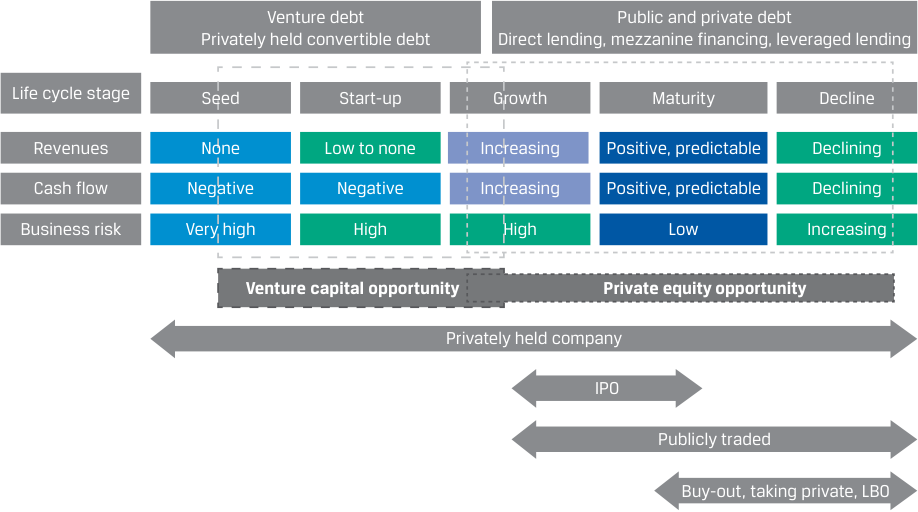
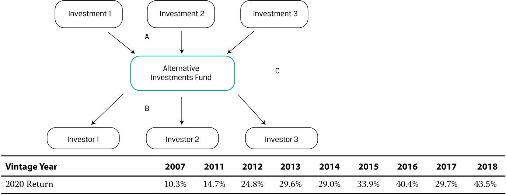
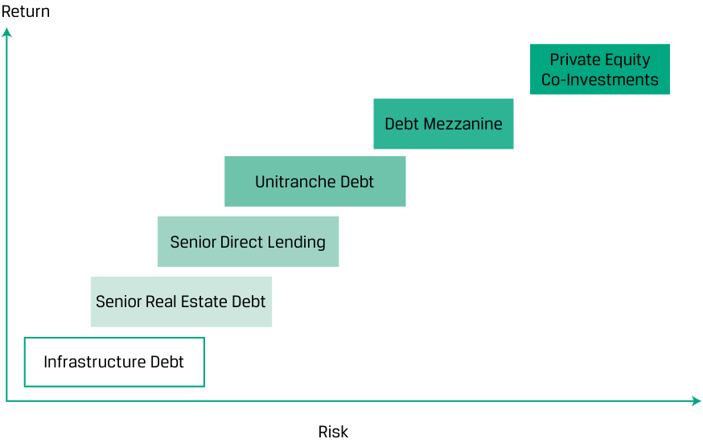

[Toàn Chương] LM03 — Learning Module 3 Investments in Private Capital: Equity and Debt
Volume 8: Alternative Investments
Learning Module 3 Investments in Private Capital: Equity and Debt
Part 1/2: Introduction (PDF Pages 73–86)
Tập 8: Đầu tư Thay thế (Alternative Investments)
Học phần 3: Đầu tư vào Vốn Tư nhân: Vốn cổ phần và Nợ (Investments in Private Capital: Equity and Debt)
Phần 1/2: Giới thiệu (Trang PDF 73–86)
L E A R N I N G M O D U L E 3
H Ọ C P H Ầ N 3
Investments in Private Capital: Equity and Debt
Đầu tư vào Vốn Tư nhân: Vốn cổ phần và Nợ (Investments in Private Capital: Equity and Debt)
LEARNING OUTCOMES
MỤC TIÊU HỌC TẬP (LEARNING OUTCOMES)
Mastery The candidate should be able to:
Thành thạo – Ứng viên cần có khả năng:
explain features of private equity and its investment characteristics explain features of private debt and its investment characteristics describe the diversification benefits that private capital can provide
- giải thích các đặc điểm của vốn cổ phần tư nhân (private equity) và các đặc tính đầu tư của nó
- giải thích các đặc điểm của nợ tư nhân (private debt) và các đặc tính đầu tư của nó
- mô tả những lợi ích đa dạng hóa (diversification benefits) mà vốn tư nhân (private capital) có thể mang lại
INTRODUCTION
GIỚI THIỆU (INTRODUCTION)
1
1
This Learning Module and the subsequent four Learning Modules explain the investment characteristics of specific alternative asset types, starting with private equity and private debt. The subsequent Learning Modules focus on real assets, natural resources, hedge funds, and digital assets. Each Learning Module introduces core characteristics, distinguishing features, and risk–return characteristics for the specific asset class. Alternative assets differ from the traditional asset classes—debt and equity—due to their unique return, risk, and information profiles and historically show low levels of correlation with debt and equity. Moreover, alternative assets often require highly specialized knowledge to select, manage, and divest these assets. Since these alternative assets are generally considered to be less liquid than traditional asset classes, understanding the valuation and return characteristics is a specialized skill.
Học phần này và bốn Học phần tiếp theo giải thích các đặc tính đầu tư của những loại tài sản thay thế cụ thể, bắt đầu với vốn cổ phần tư nhân (private equity) và nợ tư nhân (private debt). Các Học phần tiếp theo tập trung vào tài sản thực (real assets), tài nguyên thiên nhiên (natural resources), quỹ phòng hộ (hedge funds), và tài sản kỹ thuật số (digital assets). Mỗi Học phần giới thiệu các đặc điểm cốt lõi, các tính năng phân biệt, và đặc tính rủi ro – lợi nhuận (risk–return characteristics) cho từng loại tài sản cụ thể. Tài sản thay thế khác với các loại tài sản truyền thống — nợ và vốn cổ phần — do hồ sơ lợi nhuận, rủi ro và thông tin đặc thù của chúng, đồng thời trong lịch sử thường thể hiện mức độ tương quan (correlation) thấp với nợ và vốn cổ phần truyền thống. Hơn nữa, tài sản thay thế thường đòi hỏi kiến thức chuyên môn sâu rộng để lựa chọn, quản lý và thoái vốn (divest) các tài sản này. Vì các tài sản thay thế nhìn chung được coi là kém thanh khoản hơn so với các loại tài sản truyền thống, nên việc hiểu rõ đặc điểm định giá và tỷ suất sinh lợi là một kỹ năng chuyên biệt.
LEARNING MODULE OVERVIEW
TỔNG QUAN HỌC PHẦN (LEARNING MODULE OVERVIEW)
-
Private equity is a form of private capital funding sourced from outside public markets through non-traditional sources, such as venture capital and leveraged buyout firms. It can be injected at various stages of business development, from initial idea to final transition to public company status.
-
The duration of a private equity investment also varies, with funds conducting their exits typically by the strategies of trade sales to strategic buyers or public listings through IPOs or special acquisition
-
Vốn cổ phần tư nhân (private equity) là một hình thức tài trợ vốn tư nhân (private capital funding) được huy động từ bên ngoài các thị trường đại chúng thông qua các nguồn phi truyền thống, chẳng hạn như các công ty đầu tư mạo hiểm (venture capital) và các công ty mua lại bằng đòn bẩy (leveraged buyout firms). Nguồn vốn này có thể được bơm vào ở nhiều giai đoạn phát triển kinh doanh khác nhau, từ ý tưởng ban đầu cho đến bước chuyển đổi cuối cùng sang trạng thái công ty đại chúng.
-
Thời hạn của một khoản đầu tư vốn cổ phần tư nhân cũng rất đa dạng, trong đó các quỹ thường thực hiện thoái vốn (exits) thông qua các chiến lược bán thương mại (trade sales) cho người mua chiến lược (strategic buyers) hoặc niêm yết đại chúng thông qua phát hành cổ phiếu lần đầu ra công chúng (IPOs) hoặc các công ty mua lại có mục đích đặc biệt
companies (SPACs). Other strategies include recapitalizations, secondary sales, and liquidations, with all the strategies having their unique advantages and drawbacks.
(special purpose acquisition companies – SPACs). Các chiến lược khác bao gồm tái cấu trúc vốn (recapitalizations), bán thứ cấp (secondary sales), và thanh lý (liquidations), trong đó tất cả các chiến lược đều có những ưu điểm và nhược điểm riêng biệt.
-
Compared to traditional investments, private equity can offer better returns combined with higher risks. This contrast is a function of private equity’s distinct choice set, greater management control, and greater leverage. Data ambiguities make it challenging to reliably measure the benefits of private equity investing.
-
Private debt primarily refers to the various forms of debt provided by investors directly to private entities. Its four major categories are direct lending, mezzanine loans, venture debt, and distressed debt, and it also includes unitranche debt of blended loans and other specialty loans.
-
As in private equity investment, private debt can be arranged on a direct or indirect basis, with funds deployed over the corporate life cycle straight from an investor or intermediated through a fund. Investors receive interest payments and the return of principal after a designated term, with debt typically secured and having protections/ covenants.
-
Private debt has potentially higher returns and risks than traditional fixed income, with its investors needing specialized knowledge to adjust exposures for differences across company funding stages, debt structures, and underlying assets.
-
Private debt and equity are distinct in terms of risks and performance from their public counterparts due to illiquidity and concentration risk and to the often-greater uncertainties of both their underlying businesses and the means to hedge away their risks. And a fundamental timing characteristic for private capital is its vintage year, with the valuation and economic environment at the origin of a private equity fund having a potentially substantial effect on realized results over the fund’s set lifespan.
-
To offset the potentially adverse performance effects of an ill-timed fund launch at an unfavorable stage of the business cycle, investors can diversify exposure across fund vintage years.
-
Investments in private capital vary in terms of risk and return across the corporate capital structure hierarchy, with a diversified mix of private equity and debt investments potentially balancing private capital risks and returns. And when combined with public stocks and bonds, investments in private capital funds can add a moderate diversification benefit with opportunities for excess returns due to private capital’s additional leverage, market, and liquidity risks.
-
So với các khoản đầu tư truyền thống, vốn cổ phần tư nhân có thể mang lại tỷ suất sinh lợi tốt hơn đi kèm với rủi ro cao hơn. Sự tương phản này là hệ quả từ tập hợp lựa chọn khác biệt, quyền kiểm soát quản lý lớn hơn, và mức đòn bẩy cao hơn của vốn cổ phần tư nhân. Sự thiếu rõ ràng về mặt dữ liệu khiến việc đo lường một cách đáng tin cậy những lợi ích của đầu tư vốn cổ phần tư nhân trở nên đầy thách thức.
-
Nợ tư nhân (private debt) chủ yếu đề cập đến các hình thức nợ khác nhau do các nhà đầu tư cung cấp trực tiếp cho các pháp nhân tư nhân. Bốn phân loại chính của nó là cho vay trực tiếp (direct lending), các khoản vay tầng giữa (mezzanine loans), nợ mạo hiểm (venture debt), và nợ xấu/nợ gặp khó khăn tài chính (distressed debt), đồng thời cũng bao gồm nợ hợp nhất (unitranche debt) từ các khoản vay pha trộn và các khoản vay chuyên biệt khác (specialty loans).
-
Cũng giống như đầu tư vốn cổ phần tư nhân, nợ tư nhân có thể được thu xếp trên cơ sở trực tiếp hoặc gián tiếp, với nguồn vốn được giải ngân xuyên suốt vòng đời doanh nghiệp thẳng từ một nhà đầu tư hoặc qua trung gian là một quỹ đầu tư. Nhà đầu tư nhận được các khoản thanh toán tiền lãi và hoàn trả nợ gốc sau một kỳ hạn xác định, trong đó khoản nợ thường được đảm bảo (secured) và có các điều khoản bảo vệ/khế ước (protections/covenants).
-
Nợ tư nhân có tiềm năng mang lại tỷ suất sinh lợi và rủi ro cao hơn so với chứng khoán thu nhập cố định truyền thống, đòi hỏi nhà đầu tư phải có kiến thức chuyên môn để điều chỉnh mức độ phơi nhiễm rủi ro phù hợp với sự khác biệt qua các giai đoạn tài trợ của công ty, cấu trúc nợ và tài sản cơ sở.
-
Nợ và vốn cổ phần tư nhân khác biệt về mặt rủi ro và hiệu quả hoạt động so với các công cụ tương ứng trên thị trường đại chúng do rủi ro kém thanh khoản (illiquidity risk) và rủi ro tập trung (concentration risk), cũng như do những bất định thường lớn hơn của cả hoạt động kinh doanh cơ sở lẫn các phương tiện để phòng vệ (hedge) rủi ro của chúng. Và một đặc tính thời điểm nền tảng đối với vốn tư nhân là năm khởi tạo quỹ (vintage year), trong đó môi trường định giá và kinh tế tại thời điểm hình thành quỹ vốn cổ phần tư nhân có tác động tiềm tàng rất lớn đến kết quả thực tế đạt được trong suốt vòng đời cố định của quỹ.
-
Để bù đắp những tác động bất lợi tiềm ẩn đến hiệu quả hoạt động do việc ra mắt quỹ không đúng thời điểm ở một giai đoạn không thuận lợi của chu kỳ kinh doanh, nhà đầu tư có thể đa dạng hóa mức độ phơi nhiễm rủi ro qua nhiều năm khởi tạo quỹ (fund vintage years).
-
Các khoản đầu tư vào vốn tư nhân khác nhau về mức rủi ro và tỷ suất sinh lợi trên khắp thứ bậc cấu trúc vốn của doanh nghiệp (corporate capital structure hierarchy), trong đó một danh mục kết hợp đa dạng hóa giữa các khoản đầu tư vốn cổ phần tư nhân và nợ tư nhân có khả năng cân bằng rủi ro và lợi nhuận của vốn tư nhân. Và khi kết hợp với cổ phiếu và trái phiếu đại chúng, việc đầu tư vào các quỹ vốn tư nhân có thể bổ sung lợi ích đa dạng hóa vừa phải cùng với các cơ hội đạt tỷ suất sinh lợi vượt trội (excess returns) nhờ gánh chịu thêm rủi ro đòn bẩy, rủi ro thị trường và rủi ro thanh khoản của vốn tư nhân.
SELF-ASSESSMENT
TỰ ĐÁNH GIÁ (SELF-ASSESSMENT)
These initial questions are intended to help you gauge your current level of understanding of this learning module.
Những câu hỏi ban đầu này nhằm giúp bạn tự đánh giá mức độ hiểu biết hiện tại của mình về học phần này.
- At the conclusion of a public company’s leveraged buyout, the amount of its market-traded stock is substantially:
- A. reduced.
- Khi kết thúc giao dịch mua lại bằng đòn bẩy (leveraged buyout) đối với một công ty đại chúng, số lượng cổ phiếu giao dịch trên thị trường của công ty đó về cơ bản sẽ:
- A. giảm xuống.
| B.increased. f |
|---|
| C.unaffected. Solution: |
| A is correct. After the transaction, the target company becomes or remains a privately owned company. Leveraged buyouts are sometimes called “go- ing-private” transactions because after the acquisition of a publicly traded company, the target company’s equity is substantially no longer publicly traded. |
| 2. Which of the following financing tools would_most likely_be used at the later stage of venture capital investment? |
| A.Common stock |
| B.Preferred stock C.Convertible debt Solution: |
| B is correct. Preferred stock can be deployed as late into a company’s ma- turity as later-stage venture capital, when preferred stock can offer more protection to venture investors as a company transitions toward an IPO. A and C are incorrect because these instruments are more typically used in the earlier pre-seed and seed stages. |
| 3. Which of the following transaction features is associated with mezzanine debt? |
| A.Warrants |
| B.Lines of credit C.Fixed payment schedules Solution: |
| A is correct. Mezzanine debt often comes with additional features, such as warrants or conversion rights. These provide equity participation to lenders/ investors. B is incorrect because lines of credit are associated with venture debt, which entrepreneurs may seek to obtain additional financing without further diluting shareholder ownership. C is incorrect because fixed pay- ment schedules are associated with direct lending, in which, as with typical bank loans, payments are usually received on a fixed schedule. |
| 4. In using private debt for a syndicated leveraged mortgage portfolio, the financial ratio of loan to value (LTV) is important at: |
| A.origination and to the real estate fund sponsor. |
| B.syndication and to the private debt fund lender. C.both transaction phases and to each of the parties. Solution: |
| C is correct. LTV plays a significant role in both legs of this transaction. For a sponsor to be able to borrow and for a lender to be able syndicate the loans, the aggregate LTV ratio cannot be breached, and any deviation from LTV on an individual property level needs to be cured. As the loan amortiz- es, its outstanding principal declines, decreasing LTV. However, if the value of the real estate were to drop, then the sponsor will be required to raise additional collateral to maintain the LTV level. |
- B. tăng lên.
- C. không bị ảnh hưởng.
Lời giải:
A là đáp án đúng. Sau giao dịch, công ty mục tiêu trở thành hoặc vẫn giữ nguyên là một công ty thuộc sở hữu tư nhân. Các giao dịch mua lại bằng đòn bẩy (leveraged buyouts – LBOs) đôi khi được gọi là các giao dịch “chuyển thành tư nhân” (“going-private” transactions) bởi vì sau khi mua lại một công ty giao dịch đại chúng, vốn cổ phần của công ty mục tiêu về cơ bản không còn được giao dịch công khai trên thị trường nữa.
- Công cụ tài trợ nào sau đây có khả năng cao nhất được sử dụng ở giai đoạn muộn (later stage) của hoạt động đầu tư mạo hiểm (venture capital)?
- A. Cổ phiếu phổ thông (Common stock)
- B. Cổ phiếu ưu đãi (Preferred stock)
- C. Nợ chuyển đổi (Convertible debt)
Lời giải:
B là đáp án đúng. Cổ phiếu ưu đãi có thể được triển khai muộn trong quá trình trưởng thành của công ty như ở giai đoạn vốn mạo hiểm muộn (later-stage venture capital), khi cổ phiếu ưu đãi có thể mang lại sự bảo vệ tốt hơn cho các nhà đầu tư mạo hiểm lúc công ty chuyển dịch tiến tới IPO. A và C không đúng vì những công cụ này thường được sử dụng hơn ở các giai đoạn sớm hơn như tiền hạt giống (pre-seed) và hạt giống (seed).
- Đặc tính giao dịch nào sau đây gắn liền với nợ tầng giữa (mezzanine debt)?
- A. Chứng quyền (Warrants)
- B. Hạn mức tín dụng (Lines of credit)
- C. Lịch thanh toán cố định (Fixed payment schedules)
Lời giải:
A là đáp án đúng. Nợ tầng giữa (mezzanine debt) thường đi kèm với các tính năng bổ sung, chẳng hạn như chứng quyền (warrants) hoặc quyền chuyển đổi (conversion rights). Những tính năng này mang lại quyền tham gia vốn cổ phần (equity participation) cho người cho vay/nhà đầu tư. B không đúng vì hạn mức tín dụng gắn liền với nợ mạo hiểm (venture debt), thứ mà các nhà khởi nghiệp có thể tìm kiếm để có thêm nguồn tài trợ mà không làm pha loãng thêm quyền sở hữu của cổ đông. C không đúng vì lịch thanh toán cố định gắn liền với cho vay trực tiếp (direct lending), trong đó, giống như các khoản vay ngân hàng thông thường, các khoản thanh toán thường được nhận theo một lịch trình cố định.
- Khi sử dụng nợ tư nhân cho một danh mục thế chấp đòn bẩy hợp vốn (syndicated leveraged mortgage portfolio), tỷ số tài chính khoản vay trên giá trị (loan to value – LTV) đóng vai trò quan trọng tại:
- A. giai đoạn khởi tạo khoản vay và đối với nhà tài trợ quỹ bất động sản.
- B. giai đoạn hợp vốn và đối với bên cho vay là quỹ nợ tư nhân.
- C. cả hai giai đoạn giao dịch và đối với mỗi bên tham gia.
Lời giải:
C là đáp án đúng. Tỷ số LTV đóng một vai trò quan trọng trong cả hai vế của giao dịch này. Để nhà tài trợ (sponsor) có thể vay vốn và để bên cho vay (lender) có thể hợp vốn (syndicate) các khoản vay, tỷ số LTV tổng hợp không được phép bị vi phạm, và bất kỳ sự sai lệch nào khỏi mức LTV ở cấp độ từng bất động sản riêng lẻ đều cần phải được khắc phục (cured). Khi khoản vay được khấu hao/trả dần nợ gốc (amortizes), dư nợ gốc của nó giảm xuống, làm giảm tỷ số LTV. Tuy nhiên, nếu giá trị của bất động sản sụt giảm, nhà tài trợ sẽ bị yêu cầu phải bổ sung thêm tài sản thế chấp để duy trì mức LTV.
- Vintage diversification is an advisable policy for implementation by private capital:
-
A. funds.
-
B. investors.
-
C. users, such as company managers.
- Đa dạng hóa theo năm khởi tạo (vintage diversification) là một chính sách nên được áp dụng bởi đối tượng nào trong lĩnh vực vốn tư nhân:
-
A. các quỹ đầu tư (funds).
-
B. các nhà đầu tư (investors).
-
C. những người sử dụng vốn, chẳng hạn như các nhà quản lý công ty.
Solution:
Lời giải:
B is correct. The vintage year, the time when fund deployment begins, is important for comparing PE and VC investments with other funds in the same year. Because of changing business and valuation environments, funds of a certain vintage have a relative advantage based on their start-up timing. That is why investors are encouraged to pursue vintage diversification by investing in multiple vintage years. A is incorrect because once capital commitments from a fund begin, all subsequent transactions are classified as part of the same vintage year. C is incorrect because the terms and conditions of capital use are more a function of the circumstances of their company than of the origin point of their fund source.
B là đáp án đúng. Năm khởi tạo (vintage year), tức thời điểm bắt đầu giải ngân vốn của quỹ, rất quan trọng để so sánh các khoản đầu tư PE và VC với các quỹ khác trong cùng năm đó. Do môi trường kinh doanh và định giá luôn thay đổi, các quỹ thuộc một năm khởi tạo nhất định sẽ có lợi thế tương đối dựa trên thời điểm bắt đầu của chúng. Đó là lý do tại sao các nhà đầu tư được khuyến khích theo đuổi chiến lược đa dạng hóa theo năm khởi tạo bằng cách đầu tư vào nhiều năm khởi tạo khác nhau. A không đúng vì một khi các cam kết vốn từ một quỹ bắt đầu được giải ngân, tất cả các giao dịch tiếp theo của quỹ đó đều được phân loại vào cùng một năm khởi tạo. C không đúng vì các điều khoản và điều kiện sử dụng vốn phụ thuộc vào hoàn cảnh của công ty nhận vốn nhiều hơn là phụ thuộc vào thời điểm xuất phát của nguồn quỹ tài trợ.
- The potential diversification benefits from private capital investment are most likely related to its:
-
A. wide range of exit strategies.
-
B. various types of fee structures.
-
C. lower correlation with public asset returns.
-
Solution:
- Những lợi ích đa dạng hóa tiềm năng từ việc đầu tư vốn tư nhân có khả năng cao nhất liên quan đến:
-
A. phạm vi rộng các chiến lược thoái vốn của nó.
-
B. các loại cấu trúc phí đa dạng của nó.
-
C. mức độ tương quan thấp hơn của nó với tỷ suất sinh lợi của tài sản đại chúng.
C is correct. Investments in private capital funds can add a moderate diversification benefit to a portfolio of publicly traded stocks and bonds. Correlations with public market indexes vary from 0.63 to 0.83. A is incorrect because different exit strategies can offer funds the opportunity to maximize returns but do not necessarily reduce the volatility of returns over time. B is incorrect because while different fee structures may more effectively align the interests of funds and their investors, they do not necessarily change the risks of the underlying investments.
Lời giải:
C là đáp án đúng. Các khoản đầu tư vào các quỹ vốn tư nhân có thể bổ sung một lợi ích đa dạng hóa vừa phải cho danh mục gồm cổ phiếu và trái phiếu giao dịch đại chúng. Hệ số tương quan với các chỉ số thị trường đại chúng dao động từ 0,63 đến 0,83. A không đúng vì các chiến lược thoái vốn khác nhau có thể mang lại cho các quỹ cơ hội tối đa hóa tỷ suất sinh lợi nhưng không nhất thiết làm giảm mức độ biến động của tỷ suất sinh lợi theo thời gian. B không đúng vì mặc dù các cấu trúc phí khác nhau có thể giúp gắn kết lợi ích giữa các quỹ và nhà đầu tư hiệu quả hơn, nhưng chúng không nhất thiết làm thay đổi rủi ro của các khoản đầu tư cơ sở.
2
2
PRIVATE EQUITY INVESTMENT CHARACTERISTICS
ĐẶC TÍNH ĐẦU TƯ CỦA VỐN CỔ PHẦN TƯ NHÂN (PRIVATE EQUITY INVESTMENT CHARACTERISTICS)
explain features of private equity and its investment characteristics
Mục tiêu học tập: giải thích các đặc điểm của vốn cổ phần tư nhân (private equity) và các đặc tính đầu tư của nó
Private capital is the broad term for funding provided to companies that is not sourced from the public markets, such as from the sale of equities, bonds, and other securities on exchanges, or from traditional institutional providers, such as a government or bank. Capital raised from sources other than public markets and traditional institutions and in the form of an equity investment is called private equity . Comparably sourced capital extended to companies through a loan or other form of debt is referred to as private debt . Private capital relates to the entire capital structure, comprising private equity and private debt.
Vốn tư nhân (Private capital) là thuật ngữ chung chỉ nguồn tài trợ được cung cấp cho các công ty mà không được huy động từ các thị trường đại chúng (chẳng hạn như từ việc bán cổ phiếu, trái phiếu và các chứng khoán khác trên các sở giao dịch), hoặc từ các nhà cung cấp định chế truyền thống (chẳng hạn như chính phủ hoặc ngân hàng). Nguồn vốn huy động từ các nguồn ngoài thị trường đại chúng và các định chế truyền thống dưới hình thức đầu tư vốn cổ phần được gọi là vốn cổ phần tư nhân (private equity). Nguồn vốn có xuất xứ tương tự được cấp cho các công ty thông qua một khoản vay hoặc hình thức nợ khác được gọi là nợ tư nhân (private debt). Vốn tư nhân liên quan đến toàn bộ cấu trúc vốn, bao gồm cả vốn cổ phần tư nhân và nợ tư nhân.
Private equity strategies include leveraged buyout (LBO) , venture capital (VC), and growth capital. Leveraged buyouts, or highly leveraged transactions, arise when private equity firms establish buyout funds (or LBO funds) to acquire public companies
Các chiến lược vốn cổ phần tư nhân bao gồm mua lại bằng đòn bẩy (leveraged buyout – LBO), đầu tư mạo hiểm (venture capital – VC), và vốn tăng trưởng (growth capital). Mua lại bằng đòn bẩy, hay các giao dịch sử dụng đòn bẩy cao, phát sinh khi các công ty vốn cổ phần tư nhân thành lập các quỹ mua lại (buyout funds hay LBO funds) để thâu tóm các công ty đại chúng
or established private companies, with a significant percentage of the purchase price financed through debt. The target company’s assets typically serve as collateral for the debt, and the target company’s cash flows are expected to be sufficient to service the debt. The debt becomes part of the target company’s capital structure after the buyout occurs. After the transaction, the target company becomes or remains a privately owned company. LBOs are sometimes called “going private” transactions because after the acquisition of a publicly traded company, the target company’s equity is substantially no longer publicly traded.
hoặc các công ty tư nhân đã có tên tuổi, với một tỷ lệ đáng kể trong giá mua được tài trợ bằng nợ vay. Tài sản của công ty mục tiêu thường đóng vai trò làm tài sản thế chấp (collateral) cho khoản nợ, và dòng tiền của công ty mục tiêu được kỳ vọng sẽ đủ để trả nợ (service the debt). Khoản nợ trở thành một phần trong cấu trúc vốn của công ty mục tiêu sau khi thương vụ mua lại diễn ra. Sau giao dịch, công ty mục tiêu trở thành hoặc vẫn duy trì là một công ty thuộc sở hữu tư nhân. Các thương vụ LBO đôi khi được gọi là giao dịch “hủy niêm yết / chuyển thành tư nhân” (“going private” transactions) bởi vì sau khi mua lại một công ty giao dịch đại chúng, vốn cổ phần của công ty mục tiêu về cơ bản không còn được giao dịch công khai nữa.
The LBO may also be of a specific type. In a management buyout (MBO), the current management team participates in the acquisition, and in a management buy-in (MBI), the current management team is replaced with the acquiring team involved in managing the company. LBO managers seek to add value by improving company operations, boosting revenue, and ultimately increasing profits and cash flows. Cash flow growth, in order of contribution, comes from organic revenue growth, cost reductions and restructuring, acquisitions, and then all other sources. The financial returns in this category, however, depend greatly on the use of leverage. If debt financing is unavailable or costly, LBOs become less attractive and are less likely to take place. As business conditions and the availability of financing change, private equity managers may change focus.
Giao dịch LBO cũng có thể thuộc một loại hình cụ thể. Trong một thương vụ mua lại bởi ban quản lý (management buyout – MBO), đội ngũ quản lý hiện tại cùng tham gia vào thương vụ thâu tóm, và trong một thương vụ mua lại từ bên ngoài kèm thay thế quản lý (management buy-in – MBI), đội ngũ quản lý hiện tại bị thay thế bằng đội ngũ thâu tóm sẽ trực tiếp tham gia điều hành công ty. Các nhà quản lý LBO tìm cách gia tăng giá trị bằng cách cải thiện hoạt động của công ty, thúc đẩy doanh thu, và cuối cùng là gia tăng lợi nhuận và dòng tiền. Tăng trưởng dòng tiền, xét theo thứ tự mức độ đóng góp, đến từ tăng trưởng doanh thu nội tại (organic revenue growth), cắt giảm chi phí và tái cấu trúc, mua lại sáp nhập (acquisitions), và sau đó là tất cả các nguồn khác. Tuy nhiên, tỷ suất sinh lợi tài chính trong phân nhóm này phụ thuộc rất lớn vào việc sử dụng đòn bẩy (leverage). Nếu nguồn tài trợ nợ không sẵn có hoặc quá đắt đỏ, các thương vụ LBO sẽ trở nên kém hấp dẫn hơn và ít có khả năng diễn ra hơn. Khi điều kiện kinh doanh và sự sẵn có của nguồn tài trợ thay đổi, các nhà quản lý vốn cổ phần tư nhân có thể chuyển đổi trọng tâm đầu tư.
A manager may manage many private equity funds, each composed of several investments, and the companies owned are called portfolio companies because they will be part of a private equity fund portfolio.
Một nhà quản lý có thể quản lý nhiều quỹ vốn cổ phần tư nhân, mỗi quỹ bao gồm một số khoản đầu tư, và các công ty thuộc quyền sở hữu của quỹ được gọi là các công ty trong danh mục (portfolio companies) bởi vì chúng sẽ là một phần trong danh mục đầu tư của quỹ vốn cổ phần tư nhân.
There are certain similarities and differences between private equity and public equity. Both types of equity represent direct ownership and control of the corporation. Owners are shareholders and as such have voting rights at the annual general meeting of shareholders electing the board, setting strategy, and making impactful decisions for the future of the company. Additionally, all owners have a direct and proportional claim to residual cash flow rights in the form of dividends. Ultimately, because of significant shareholdings, private equity ownership allows more direct control over decisions than public equity. Because of this, managing a direct private investment exposure requires specialized knowledge specific to the industry and sector the firm is in. Capital gains are typically the largest driver of returns, either through price appreciation or from free cash flow generated by the holdings.
Có những điểm tương đồng và khác biệt nhất định giữa vốn cổ phần tư nhân (private equity) và vốn cổ phần đại chúng (public equity). Cả hai loại vốn cổ phần đều đại diện cho quyền sở hữu trực tiếp và quyền kiểm soát đối với công ty. Những người sở hữu là các cổ đông và do đó có quyền biểu quyết tại đại hội đồng cổ đông thường niên để bầu hội đồng quản trị, hoạch định chiến lược và đưa ra các quyết định có ảnh hưởng lớn đến tương lai của công ty. Ngoài ra, tất cả những người sở hữu đều có quyền đòi hỏi trực tiếp và theo tỷ lệ đối với dòng tiền còn lại (residual cash flow rights) dưới hình thức cổ tức. Xét cho cùng, nhờ tỷ lệ nắm giữ cổ phần đáng kể, quyền sở hữu vốn cổ phần tư nhân cho phép kiểm soát trực tiếp các quyết định nhiều hơn so với vốn cổ phần đại chúng. Chính vì điều này, việc quản lý một khoản đầu tư tư nhân trực tiếp đòi hỏi kiến thức chuyên môn đặc thù đối với ngành và lĩnh vực mà công ty đang hoạt động. Lãi vốn (capital gains) thường là động lực tạo ra tỷ suất sinh lợi lớn nhất, thông qua sự tăng giá cổ phần hoặc từ dòng tiền tự do (free cash flow) được tạo ra bởi các tài sản nắm giữ.
Equity investment, whether in public or private companies, has historically exhibited higher returns at the expense of greater risk compared with debt. The potential pay off for equity investors is unlimited upside with the downside limited to the amount invested. However, there are some differences as well.
Đầu tư vốn cổ phần, dù là vào các công ty đại chúng hay tư nhân, trong lịch sử đều thể hiện tỷ suất sinh lợi cao hơn với cái giá phải trả là rủi ro lớn hơn so với nợ vay. Phần thưởng tiềm năng dành cho các nhà đầu tư vốn cổ phần là tiềm năng tăng giá không giới hạn (unlimited upside) với mức lỗ tối đa (downside) được giới hạn ở số tiền đã đầu tư. Tuy nhiên, cũng có một số điểm khác biệt.
Private Equity Investment Categories
Các Phân loại Đầu tư Vốn cổ phần Tư nhân (Private Equity Investment Categories)
Private equity investments can be direct, through a single private equity fund, or indirect, through a fund-of-funds vehicle with stakes in various other private funds. With a direct private equity investment, the investment is made in a single, specific asset, but there may also be co-investments where the investor will participate alongside a lead sponsor who sources, structures, and executes the transaction.
Các khoản đầu tư vốn cổ phần tư nhân có thể là trực tiếp, thông qua một quỹ vốn cổ phần tư nhân đơn lẻ, hoặc gián tiếp, thông qua một phương tiện quỹ của các quỹ (fund-of-funds vehicle) nắm giữ cổ phần trong nhiều quỹ tư nhân khác nhau. Với một khoản đầu tư vốn cổ phần tư nhân trực tiếp, khoản đầu tư được thực hiện vào một tài sản cụ thể, đơn lẻ, nhưng cũng có thể có các khoản đồng đầu tư (co-investments) nơi nhà đầu tư sẽ tham gia cùng với một nhà tài trợ chính (lead sponsor) — người tìm kiếm nguồn giao dịch, cấu trúc và thực thi giao dịch đó.
Non-public equity is often categorized by the investor’s entry point in a company’s life cycle (venture capital versus private equity), as Exhibit 1 shows.
Vốn cổ phần phi đại chúng thường được phân loại theo thời điểm gia nhập (entry point) của nhà đầu tư trong vòng đời của công ty (đầu tư mạo hiểm so với vốn cổ phần tư nhân), như Minh họa 1 trình bày.
Exhibit 1: Private and Venture Capital across the Corporate Life Cycle Stages
Minh họa 1: Vốn Tư nhân và Vốn Mạo hiểm qua các Giai đoạn Vòng đời Doanh nghiệp (Private and Venture Capital across the Corporate Life Cycle Stages)
Chú thích hình ảnh: - Nguồn vốn ở giai đoạn đầu: Vốn cổ phần hạt giống (Seed equity capital), cổ phiếu ưu đãi chuyển đổi (convertible preferred), nhiều vòng tài trợ (multiple financing series) $\rightarrow$ Cơ hội đầu tư mạo hiểm (Venture capital opportunity) (Công ty tư nhân nắm giữ - Privately held company). - Nguồn vốn ở giai đoạn sau: Vốn cổ phần đại chúng và tư nhân (Public and private equity); nợ đại chúng và tư nhân (public and private debt) $\rightarrow$ Cơ hội vốn cổ phần tư nhân (Private equity opportunity) (Từ IPO, giao dịch đại chúng - Publicly traded, đến Mua lại, chuyển thành tư nhân, LBO - Buy-out, taking private, LBO). - Các giai đoạn vòng đời (Life cycle stage): - Hạt giống (Seed): Doanh thu (Revenues): Không có (None) | Dòng tiền (Cash flow): Âm (Negative) | Rủi ro kinh doanh (Business risk): Rất cao (Very high). - Khởi nghiệp (Start-up): Doanh thu: Thấp đến không có (Low to none) | Dòng tiền: Âm (Negative) | Rủi ro kinh doanh: Cao (High). - Tăng trưởng (Growth): Doanh thu: Đang tăng (Increasing) | Dòng tiền: Đang tăng (Increasing) | Rủi ro kinh doanh: Cao (High). - Trưởng thành (Maturity): Doanh thu: Dương, có thể dự đoán (Positive, predictable) | Dòng tiền: Dương, có thể dự đoán (Positive, predictable) | Rủi ro kinh doanh: Thấp (Low). - Suy thoái (Decline): Doanh thu: Đang giảm (Declining) | Dòng tiền: Đang giảm (Declining) | Rủi ro kinh doanh: Đang tăng (Increasing).
Venture capital entails investing in or providing financing to private companies with high growth potential. Typically, these are start-ups or young companies, but venture capital can be injected at various stages, ranging from concept creation for a company or near the point of a company’s IPO (initial public offering) launch or its acquisition. The investment return required varies with the company’s stage of development. Investors in early-stage companies will demand higher expected returns relative to later-stage investors because the earlier the stage of development, the higher the risk.
Đầu tư mạo hiểm (Venture capital) bao gồm việc đầu tư vào hoặc cung cấp tài trợ cho các công ty tư nhân có tiềm năng tăng trưởng cao. Thông thường, đây là các công ty khởi nghiệp (start-ups) hoặc các công ty non trẻ, nhưng vốn mạo hiểm có thể được bơm vào ở nhiều giai đoạn khác nhau, trải dài từ khi hình thành ý tưởng cho một công ty cho đến gần thời điểm công ty tiến hành IPO (phát hành cổ phiếu lần đầu ra công chúng) hoặc được mua lại. Tỷ suất sinh lợi đầu tư yêu cầu thay đổi tùy theo giai đoạn phát triển của công ty. Các nhà đầu tư vào những công ty ở giai đoạn đầu (early-stage companies) sẽ đòi hỏi tỷ suất sinh lợi kỳ vọng cao hơn so với các nhà đầu tư ở giai đoạn sau (later-stage investors) bởi vì giai đoạn phát triển càng sớm thì rủi ro càng cao.
Venture capitalists, like all private equity managers, are active investors directly involved with their portfolio companies.
Các nhà đầu tư mạo hiểm (venture capitalists), giống như tất cả các nhà quản lý vốn cổ phần tư nhân, là những nhà đầu tư chủ động (active investors) tham gia trực tiếp vào các công ty trong danh mục của họ.
VC funds typically invest in companies and receive an equity interest but may also provide financing in the form of debt (commonly, convertible debt). Exhibit 2 summarizes the financing stages at different phases of the venture.
Các quỹ VC thường đầu tư vào các công ty và nhận về lợi ích vốn cổ phần (equity interest) nhưng cũng có thể cung cấp tài trợ dưới hình thức nợ (phổ biến là nợ chuyển đổi – convertible debt). Minh họa 2 tóm tắt các giai đoạn tài trợ ở các pha khác nhau của dự án mạo hiểm.
Exhibit 2: Stages of Venture Capital
Minh họa 2: Các Giai đoạn của Đầu tư Mạo hiểm (Stages of Venture Capital)
|Stage|Pre-seed|Seed|Early stage | Later stage|
|---|---|---|---|
|Investors|• Founders
• Friends and
family
• Angel investors|• Seed funds
• Angel investors|• Venture capital funds
• Corporate venture funds
• Private equity investors
• Strategic investors|
|Typical invest-
ment amount|USD5k–USD500k|USD25k–
USD5mil|USD5mil+|
|Source of
capital|Mainly
individuals|Funds|• Institutional investors
• Family offices
• Strategic investors|
| Giai đoạn (Stage) | Tiền hạt giống (Pre-seed) | Hạt giống (Seed) | Giai đoạn đầu | Giai đoạn muộn (Early stage | Later stage) |
|---|---|---|---|
| Nhà đầu tư (Investors) | • Nhà sáng lập (Founders) • Bạn bè và gia đình (Friends and family) • Nhà đầu tư thiên thần (Angel investors) |
• Quỹ hạt giống (Seed funds) • Nhà đầu tư thiên thần (Angel investors) |
• Quỹ đầu tư mạo hiểm (Venture capital funds) • Quỹ đầu tư mạo hiểm doanh nghiệp (Corporate venture funds) • Nhà đầu tư vốn cổ phần tư nhân (Private equity investors) • Nhà đầu tư chiến lược (Strategic investors) |
| Quy mô đầu tư điển hình (Typical investment amount) | USD5k–USD500k | USD25k–USD5mil | USD5mil+ |
| Nguồn vốn (Source of capital) | Chủ yếu là cá nhân (Mainly individuals) | Các quỹ (Funds) | • Nhà đầu tư định chế (Institutional investors) • Văn phòng quản lý gia sản (Family offices) • Nhà đầu tư chiến lược (Strategic investors) |
- Pre-seed capital , or angel investing , is capital provided at the idea stage. Funds may be used to develop a business plan and to assess market potential. The amount of financing here is typically small and sourced from individuals, often friends and family, rather than by VC funds.
- Vốn tiền hạt giống (Pre-seed capital), hay đầu tư thiên thần (angel investing), là nguồn vốn được cung cấp ở giai đoạn ý tưởng. Nguồn vốn có thể được sử dụng để xây dựng kế hoạch kinh doanh và đánh giá tiềm năng thị trường. Quy mô tài trợ ở đây thường nhỏ và được huy động từ các cá nhân, thường là bạn bè và gia đình, hơn là từ các quỹ VC.
-
Seed-stage financing , or seed capital , generally supports product development and marketing efforts, including market research. This is the first stage at which VC funds usually invest.
-
Early-stage financing (early-stage VC), or start-up stage financing , goes to companies moving toward operation but prior to commercial production or sales, in both of which early-stage financing may be injected to initiate.
-
Later-stage financing (expansion VC) comes after commercial production and sales have begun but before an IPO. Funds may be used to support initial growth, a major expansion (such as a physical plant upgrade), product improvements, or a major marketing campaign.
-
Tài trợ giai đoạn hạt giống (Seed-stage financing), hay vốn hạt giống (seed capital), nhìn chung hỗ trợ việc phát triển sản phẩm và các nỗ lực tiếp thị, bao gồm cả nghiên cứu thị trường. Đây là giai đoạn đầu tiên mà các quỹ VC thường bắt đầu đầu tư.
-
Tài trợ giai đoạn đầu (Early-stage financing – early-stage VC), hay tài trợ giai đoạn khởi nghiệp (start-up stage financing), hướng đến các công ty đang tiến tới việc vận hành nhưng trước khi sản xuất thương mại hoặc bán hàng, những hoạt động mà tài trợ giai đoạn đầu có thể được bơm vào để khởi động.
-
Tài trợ giai đoạn muộn (Later-stage financing – expansion VC) diễn ra sau khi hoạt động sản xuất thương mại và bán hàng đã bắt đầu nhưng trước khi thực hiện IPO. Nguồn vốn có thể được sử dụng để hỗ trợ tăng trưởng ban đầu, một đợt mở rộng quy mô lớn (chẳng hạn như nâng cấp nhà máy vật chất), cải tiến sản phẩm, hoặc một chiến dịch tiếp thị lớn.
Later-stage financing generally involves management selling control of the company to the VC investor; financing is provided through equity and debt, although the fund may also use convertible bonds or convertible preferred shares. The VC fund offers debt financing for reasons of recovery and the control of assets in a bankruptcy situation, not to generate income. Simply put, debt financing affords the VC fund more protection than equity does.
Tài trợ giai đoạn muộn nhìn chung bao gồm việc ban quản lý bán quyền kiểm soát công ty cho nhà đầu tư VC; nguồn tài trợ được cung cấp thông qua vốn cổ phần và nợ vay, mặc dù quỹ cũng có thể sử dụng trái phiếu chuyển đổi (convertible bonds) hoặc cổ phiếu ưu đãi chuyển đổi (convertible preferred shares). Quỹ VC cung cấp tài trợ nợ vì lý do thu hồi vốn (recovery) và kiểm soát tài sản trong tình huống phá sản, chứ không phải để tạo ra thu nhập. Nói một cách đơn giản, tài trợ nợ mang lại cho quỹ VC sự bảo vệ nhiều hơn so với vốn cổ phần.
Mezzanine-stage financing (mezzanine venture capital) prepares a company to go public as it continues to expand capacity and enhance its growth trajectory. It represents the bridge financing needed to fund a private firm until it can execute an IPO or be sold. The term mezzanine-stage financing is used because it is infused between private and public company status, principally distinguished by the timing of the financing rather than its method. While the terms sound quite similar, mezzanine financing is different from mezzanine-stage financing. Mezzanine financing relates to the use of equity–debt hybrid instruments, such as convertible debt or convertible preferred. Mezzanine-stage financing can use mezzanine financing, but typically at this stage the main financing is either equity-like (to capture potential gains from the planned IPO) or short-term debt.
Tài trợ giai đoạn tầng giữa (Mezzanine-stage financing – mezzanine venture capital) chuẩn bị cho một công ty bước ra công chúng khi công ty tiếp tục mở rộng công suất và nâng cao quỹ đạo tăng trưởng của mình. Nó đại diện cho nguồn tài trợ bắc cầu (bridge financing) cần thiết để tài trợ cho một công ty tư nhân cho đến khi công ty đó có thể thực hiện IPO hoặc được bán lại. Thuật ngữ tài trợ giai đoạn tầng giữa được sử dụng bởi vì nó được bơm vào ở khoảng giữa trạng thái công ty tư nhân và công ty đại chúng, được phân biệt chủ yếu bởi thời điểm tài trợ hơn là phương thức tài trợ. Mặc dù các thuật ngữ nghe khá giống nhau, tài trợ tầng giữa (mezzanine financing) khác với tài trợ giai đoạn tầng giữa (mezzanine-stage financing). Tài trợ tầng giữa liên quan đến việc sử dụng các công cụ lai ghép giữa vốn cổ phần và nợ (equity–debt hybrid instruments), chẳng hạn như nợ chuyển đổi hoặc cổ phiếu ưu đãi chuyển đổi. Tài trợ giai đoạn tầng giữa có thể sử dụng tài trợ tầng giữa, nhưng thông thường ở giai đoạn này, hình thức tài trợ chính mang tính chất giống vốn cổ phần (equity-like — nhằm nắm bắt lợi nhuận tiềm năng từ đợt IPO dự kiến) hoặc nợ ngắn hạn.
Convertible preferred shares are often used in start-ups to raise private capital from venture capital funds. Since convertible preferred shares include an option for the holder to convert the preferred shares into a fixed number of common shares after a predetermined date and in some cases at a predetermined price, they provide incentive alignment between the entrepreneurs in the start-up and the investor. The conversion value is ultimately based on the valuation of the start-up. Investing in a start-up is risky because the investor is financing a new and unproven business. Preferred convertible equity provides investors with additional protections that are not available to common shareholders. Most importantly, in the event of a liquidation, preferred convertible shareholders have seniority over common shareholders and are entitled to recover the entire value of their investment before common shareholders receive any of the proceeds.
Cổ phiếu ưu đãi chuyển đổi (convertible preferred shares) thường được sử dụng tại các công ty khởi nghiệp để huy động vốn tư nhân từ các quỹ đầu tư mạo hiểm. Vì cổ phiếu ưu đãi chuyển đổi bao gồm một quyền chọn cho phép người nắm giữ chuyển đổi cổ phiếu ưu đãi thành một số lượng cố định cổ phiếu phổ thông sau một ngày xác định trước và trong một số trường hợp tại một mức giá xác định trước, chúng tạo ra sự gắn kết lợi ích (incentive alignment) giữa các nhà khởi nghiệp tại công ty start-up và nhà đầu tư. Giá trị chuyển đổi xét cho cùng dựa trên mức định giá của công ty khởi nghiệp đó. Đầu tư vào một công ty khởi nghiệp chứa đựng nhiều rủi ro bởi vì nhà đầu tư đang tài trợ cho một doanh nghiệp mới và chưa được kiểm chứng. Vốn cổ phần ưu đãi chuyển đổi mang lại cho các nhà đầu tư những sự bảo vệ bổ sung không có sẵn đối với các cổ đông phổ thông. Quan trọng nhất, trong trường hợp thanh lý (liquidation), các cổ đông nắm giữ cổ phiếu ưu đãi chuyển đổi có thứ tự ưu tiên cao hơn (seniority) so với các cổ đông phổ thông và có quyền thu hồi toàn bộ giá trị khoản đầu tư của mình trước khi các cổ đông phổ thông nhận được bất kỳ khoản tiền thu được nào.
When investing, the manager of the venture capital fund is largely confident that the portfolio company’s management team is competent and armed with a solid business plan showing strong prospects for growth. Because these companies are immature businesses without years of operational and financial performance history, estimating company valuations and their future prospects is highly subjective.
Khi đầu tư, nhà quản lý quỹ đầu tư mạo hiểm phần lớn đặt niềm tin rằng đội ngũ quản lý của công ty trong danh mục có đủ năng lực và được trang bị một kế hoạch kinh doanh vững chắc cho thấy triển vọng tăng trưởng mạnh mẽ. Bởi vì các công ty này là những doanh nghiệp chưa trưởng thành, chưa có lịch sử hoạt động và kết quả tài chính qua nhiều năm, nên việc ước tính định giá công ty và triển vọng tương lai của chúng mang tính chủ quan rất cao.
Once venture capital sees an exit opportunity, private equity can take over. Private equity firms specialized in the later-stage life cycle phase seek to generate returns by directly influencing management and implementing strategy changes, particularly for both publicly traded and privately held companies that are underperforming their peers. Here, private equity focuses on increasing the value of the core business by adaptively changing the overall business strategy by eliminating poor-performing business lines or businesses that do not generate sufficiently high returns. These
Một khi vốn đầu tư mạo hiểm nhận thấy cơ hội thoái vốn, vốn cổ phần tư nhân (private equity) có thể tiếp quản. Các công ty vốn cổ phần tư nhân chuyên về giai đoạn sau của vòng đời doanh nghiệp tìm cách tạo ra tỷ suất sinh lợi bằng cách tác động trực tiếp đến ban quản lý và thực thi các thay đổi chiến lược, đặc biệt đối với cả các công ty giao dịch đại chúng và công ty tư nhân đang hoạt động kém hiệu quả hơn so với các công ty cùng ngành. Tại đây, vốn cổ phần tư nhân tập trung vào việc gia tăng giá trị của mảng kinh doanh cốt lõi bằng cách thay đổi linh hoạt chiến lược kinh doanh tổng thể thông qua việc loại bỏ các dòng kinh doanh hoạt động kém hoặc các mảng kinh doanh không tạo ra tỷ suất sinh lợi đủ cao. Những
strategic changes can generate value that can be extracted either from the assets in place (selling underperforming assets) or by creating a more sustainable strategy and selling the company at a higher valuation.
thay đổi chiến lược này có thể tạo ra giá trị được khai thác từ chính các tài sản hiện hữu (bán đi các tài sản hoạt động kém hiệu quả) hoặc bằng cách kiến tạo một chiến lược bền vững hơn và bán lại công ty ở mức định giá cao hơn.
Established companies in a transition phase may seek minority equity interest to expand, restructure, or acquire other companies. A private equity firm that engages in minority equity investing, also known as growth equity or growth capital, takes a less-than-controlling interest in more mature companies looking for capital to expand or restructure operations, enter new markets, or finance major acquisitions. Many times, minority equity investing is initiated and sought by the management of the investee company. The management’s motive is to realize earnings from selling a portion of its shares before the company can go public but still retain control and participation in the success of the company. Although this scenario occurs most commonly with private companies, publicly quoted companies can seek private equity capital through PIPEs (private investments in public equities).
Các công ty đã có chỗ đứng đang trong giai đoạn chuyển đổi có thể tìm kiếm lợi ích vốn cổ phần thiểu số (minority equity interest) để mở rộng, tái cấu trúc hoặc mua lại các công ty khác. Một công ty vốn cổ phần tư nhân tham gia vào hoạt động đầu tư vốn cổ phần thiểu số, còn được gọi là vốn cổ phần tăng trưởng (growth equity) hay vốn tăng trưởng (growth capital), sẽ nắm giữ một tỷ lệ lợi ích dưới mức kiểm soát (less-than-controlling interest) tại các công ty trưởng thành hơn đang tìm kiếm nguồn vốn để mở rộng hoặc tái cấu trúc hoạt động, thâm nhập thị trường mới, hoặc tài trợ cho các thương vụ mua lại lớn. Nhiều khi, hoạt động đầu tư vốn cổ phần thiểu số được khởi xướng và tìm kiếm bởi chính ban quản lý của công ty nhận đầu tư (investee company). Động cơ của ban quản lý là hiện thực hóa lợi nhuận từ việc bán một phần cổ phiếu của mình trước khi công ty có thể lên sàn nhưng vẫn giữ được quyền kiểm soát và sự tham gia vào thành công của công ty. Mặc dù kịch bản này xảy ra phổ biến nhất với các công ty tư nhân, các công ty niêm yết đại chúng cũng có thể tìm kiếm nguồn vốn cổ phần tư nhân thông qua các giao dịch PIPE (private investments in public equities – đầu tư tư nhân vào vốn cổ phần đại chúng).
EXAMPLE 1
VÍ DỤ 1
Tenderledge and Arguston—Buyout
Tenderledge và Arguston — Mua lại (Buyout)
A private equity firm, Tenderledge Opportunity Fund LLC, is evaluating Arguston Inc. Arguston is a mid-sized manufacturing firm operating in a mature industry and has seen both its revenues and earnings drop. Arguston does not have the needed capital to make the necessary long-term investments in technological upgrades to maintain its competitiveness or to recapture and extend its dwindling market share. The company is closely held, but the current owners and its management do not have the financial capacity to make the necessary investments and are willing to be bought out by Tenderledge.
Một công ty vốn cổ phần tư nhân, Tenderledge Opportunity Fund LLC, đang đánh giá Arguston Inc. Arguston là một công ty sản xuất quy mô vừa hoạt động trong một ngành đã trưởng thành và đang chứng kiến cả doanh thu lẫn lợi nhuận sụt giảm. Arguston không có đủ nguồn vốn cần thiết để thực hiện các khoản đầu tư dài hạn tất yếu vào việc nâng cấp công nghệ nhằm duy trì khả năng cạnh tranh hoặc giành lại và mở rộng thị phần đang ngày càng thu hẹp của mình. Công ty thuộc sở hữu tập trung (closely held), nhưng những người chủ sở hữu hiện tại và ban quản lý của công ty không có đủ năng lực tài chính để thực hiện các khoản đầu tư cần thiết và sẵn sàng để Tenderledge mua lại (bought out).
To make the investment in Arguston, Tenderledge would not only provide needed capital but also restructure Arguston’s operations to create efficiencies by reducing unnecessary redundancies and streamlining production, operations, and administration. It would likely replace management and install its own board members.
Để thực hiện khoản đầu tư vào Arguston, Tenderledge sẽ không chỉ cung cấp nguồn vốn cần thiết mà còn tái cấu trúc hoạt động của Arguston nhằm tạo ra hiệu quả bằng cách cắt giảm những sự dư thừa không cần thiết và tinh gọn hoạt động sản xuất, vận hành cũng như hành chính. Quỹ nhiều khả năng sẽ thay thế ban quản lý và đưa các thành viên hội đồng quản trị của chính mình vào.
Tenderledge is likely to reduce overhead costs and cut employment levels. Once the restructuring and technological investments bear fruit, Tenderledge may also opt to consider acquiring some of Arguston’s competitors to create additional growth through economies of scale and scope. Ultimately, the objective is to increase the value of Arguston and exit from the investment at a much higher price.
Tenderledge có khả năng sẽ cắt giảm chi phí quản lý chung (overhead costs) và giảm mức lao động. Một khi việc tái cấu trúc và các khoản đầu tư công nghệ đơm hoa kết trái, Tenderledge cũng có thể lựa chọn xem xét mua lại một số đối thủ cạnh tranh của Arguston để tạo ra sự tăng trưởng bổ sung thông qua lợi thế kinh tế theo quy mô và phạm vi (economies of scale and scope). Cuối cùng, mục tiêu là gia tăng giá trị của Arguston và thoái vốn khỏi khoản đầu tư ở một mức giá cao hơn nhiều.
A PIPE (private investment in public equity) transaction is a private offering to select investors with fewer disclosures and lower transaction costs that allows the issuer to raise capital more quickly and cost effectively than with other means that may be more regulated, expensive, and lengthy. In a traditional PIPE transaction, either newly issued common stock or shares sold by existing stockholders—or a combination of both—in an already-publicly traded company are made available to certain investors. These investors, typically investment firms, mutual funds, or other institutional investors, enter into a definitive purchase agreement with the issuer and commit to purchase securities at a fixed price. These transactions are common in work-out or rescue situations where there is a material difference in the market price and valuations. A special case of PIPE is capital raised through convertible debt or convertible preferred stock. PIPE transactions are also dilutive to existing shareholders, and the new investors require a discount to market on the purchase price, which can introduce incentive conflicts between existing shareholders and new shareholders.
Một giao dịch PIPE (private investment in public equity – đầu tư tư nhân vào vốn cổ phần đại chúng) là một đợt chào bán riêng lẻ cho các nhà đầu tư được chọn lọc với ít yêu cầu công bố thông tin hơn và chi phí giao dịch thấp hơn, cho phép tổ chức phát hành huy động vốn nhanh chóng và hiệu quả về chi phí hơn so với các phương thức khác vốn có thể chịu nhiều quy định quản lý hơn, đắt đỏ hơn và kéo dài hơn. Trong một giao dịch PIPE truyền thống, cổ phiếu phổ thông mới phát hành hoặc cổ phiếu được bán bởi các cổ đông hiện hữu — hoặc kết hợp cả hai — tại một công ty đã giao dịch đại chúng sẽ được chào bán cho một số nhà đầu tư nhất định. Các nhà đầu tư này, thường là các công ty đầu tư, quỹ tương hỗ, hoặc các nhà đầu tư định chế khác, ký kết một thỏa thuận mua bán dứt khoát (definitive purchase agreement) với tổ chức phát hành và cam kết mua chứng khoán tại một mức giá cố định. Những giao dịch này rất phổ biến trong các tình huống tháo gỡ khó khăn tài chính (work-out) hoặc giải cứu (rescue situations) nơi có sự chênh lệch trọng yếu giữa giá thị trường và giá trị định giá. Một trường hợp đặc biệt của PIPE là nguồn vốn được huy động thông qua nợ chuyển đổi hoặc cổ phiếu ưu đãi chuyển đổi. Các giao dịch PIPE cũng gây pha loãng (dilutive) cho các cổ đông hiện hữu, và các nhà đầu tư mới thường yêu cầu một mức chiết khấu so với giá thị trường (discount to market) trên giá mua, điều này có thể làm phát sinh xung đột lợi ích giữa các cổ đông hiện hữu và các cổ đông mới.
EXPEDIA AND PIPE DURING COVID-19
EXPEDIA VÀ GIAO DỊCH PIPE TRONG ĐẠI DỊCH COVID-19
Private investment in public equity often signals confidence in a company’s prospects and offers companies an accelerated approach to raise capital by selling large chunks of its equity to investors who often take board seats to directly get involved in setting business strategy. But these transactions can be costly.
Đầu tư tư nhân vào vốn cổ phần đại chúng (PIPE) thường phát đi tín hiệu về niềm tin vào triển vọng của một công ty và mang lại cho các công ty một phương thức tăng tốc để huy động vốn bằng cách bán những lô lớn vốn cổ phần của mình cho các nhà đầu tư — những người thường nắm giữ ghế trong hội đồng quản trị để trực tiếp tham gia vào việc hoạch định chiến lược kinh doanh. Nhưng những giao dịch này có thể rất đắt đỏ.
In March 2020, the early stages of the COVID-19 pandemic led to a severe decline in travel, creating crisis conditions for the industry. Expedia, an online business and retail travel platform operating several brands, sold USD1.2 billion of preferred shares to two private equity managers, gave each firm a seat on its board, and issued USD2 billion of additional debt.
Vào tháng 3 năm 2020, giai đoạn đầu của đại dịch COVID-19 đã dẫn đến sự sụt giảm nghiêm trọng trong hoạt động du lịch, tạo ra tình trạng khủng hoảng cho toàn ngành. Expedia, một nền tảng du lịch bán lẻ và doanh nghiệp trực tuyến vận hành nhiều thương hiệu, đã bán 1,2 tỷ USD cổ phiếu ưu đãi cho hai nhà quản lý vốn cổ phần tư nhân, trao cho mỗi công ty một ghế trong hội đồng quản trị của mình, và phát hành thêm 2 tỷ USD nợ vay.
The preferred shares pay a fixed rate of 9.5% and warrants to purchase common stock. All in all, Expedia accumulated over USD4 billion in liquidity to weather the business disruption caused by the pandemic.
Cổ phiếu ưu đãi này trả mức cổ tức cố định 9,5% kèm theo chứng quyền (warrants) để mua cổ phiếu phổ thông. Tổng cộng, Expedia đã tích lũy được hơn 4 tỷ USD thanh khoản để vượt qua sự gián đoạn kinh doanh do đại dịch gây ra.
Expedia may redeem these preferred shares at preset prices during certain time periods and at preset periods.
Expedia có thể mua lại (redeem) số cổ phiếu ưu đãi này tại các mức giá ấn định trước trong những khoảng thời gian nhất định.
| Time period | Redemption price |
|---|---|
| Up to the first year of issuance | 105.0% |
| Between first and second year of issuance | 103.0% |
| Between second and third year of issuance | 102.0% |
| Between third and fourth year of issuance | 101.0% |
| After the fourth year of issuance | 100.0% |
| Khoảng thời gian (Time period) | Giá mua lại (Redemption price) |
|---|---|
| Đến hết năm đầu tiên kể từ khi phát hành | 105,0% |
| Giữa năm thứ nhất và năm thứ hai kể từ khi phát hành | 103,0% |
| Giữa năm thứ hai và năm thứ ba kể từ khi phát hành | 102,0% |
| Giữa năm thứ ba và năm thứ tư kể từ khi phát hành | 101,0% |
| Sau năm thứ tư kể từ khi phát hành | 100,0% |
When redeeming these shares, Expedia also has to pay any unpaid and accrued dividends. Additionally, Expedia also issued warrants to purchase 8.4 million shares of common equity at an exercise price of USD72.00 per share; these warrants have an expiration of 10 years.
Khi mua lại số cổ phiếu này, Expedia cũng phải thanh toán bất kỳ khoản cổ tức nào chưa trả và đã tích lũy (unpaid and accrued dividends). Ngoài ra, Expedia cũng đã phát hành chứng quyền để mua 8,4 triệu cổ phiếu phổ thông tại mức giá thực hiện (exercise price) là 72,00 USD mỗi cổ phiếu; các chứng quyền này có thời hạn 10 năm.
Finally, Expedia also issued debt with an aggregate principal amount up to USD855 million. Its euro-denominated debt paid up to a 2.35% annual interest rate until 31 December 2021 and after that date paid up to 1.75%.
Cuối cùng, Expedia cũng đã phát hành nợ với tổng số tiền gốc lên tới 855 triệu USD. Khoản nợ định danh bằng đồng euro của hãng trả lãi suất hàng năm lên tới 2,35% cho đến ngày 31 tháng 12 năm 2021 và sau ngày đó trả tối đa 1,75%.
Assuming the adverse business conditions recovered fairly quickly to enable Expedia redemption of the financing at the midpoint (2 years) of the term sheet and it had not paid any preferred dividends beforehand, Expedia’s cost would be [(1.02) + (0.095 × 2)](USD1.2 billion) = USD1.45 billion, or USD250 million in excess of the preferred fund raise, plus the potential dilutive effects on earnings of 8.4 million extra common shares if their market price exceeded the USD72 warrant exercise price. As a benchmark comparison, the dividend yield of the largest US market preferred ETF, iShares Preferred and Income Securities, was approximately 5.6% in the summer of 2020, a substantially lower yield.
Giả sử các điều kiện kinh doanh bất lợi phục hồi khá nhanh chóng cho phép Expedia mua lại khoản tài trợ tại điểm giữa (2 năm) của bản điều khoản (term sheet) và hãng chưa thanh toán bất kỳ khoản cổ tức ưu đãi nào trước đó, chi phí của Expedia sẽ là $[(1,02) + (0,095 \times 2)](\text{USD } 1,2\text{ tỷ}) = \text{USD } 1,45\text{ tỷ}$, hay cao hơn 250 triệu USD so với số vốn ưu đãi huy động được, cộng với tác động pha loãng tiềm tàng lên thu nhập từ 8,4 triệu cổ phiếu phổ thông tăng thêm nếu giá thị trường của chúng vượt quá mức giá thực hiện chứng quyền là 72 USD. Để so sánh làm chuẩn (benchmark), tỷ suất cổ tức (dividend yield) của quỹ ETF cổ phiếu ưu đãi lớn nhất thị trường Hoa Kỳ, iShares Preferred and Income Securities, là khoảng 5,6% vào mùa hè năm 2020, một mức lợi suất thấp hơn đáng kể.
Private Equity Exit Strategies
Các Chiến lược Thoái vốn Vốn cổ phần Tư nhân (Private Equity Exit Strategies)
Private equity firms seek to improve new or underperforming businesses and then exit them at higher valuations, buying and holding companies for an average of five years. Holding time, however, can range from less than six months to more than 10 years. Before deciding on an exit strategy, private equity managers assess the dynamics of the industry in which the portfolio company competes, the overall economic cycle, interest rates, and company performance.
Các công ty vốn cổ phần tư nhân tìm cách cải thiện các doanh nghiệp mới hoặc đang hoạt động kém hiệu quả và sau đó thoái vốn khỏi chúng ở các mức định giá cao hơn, thông qua việc mua và nắm giữ các công ty trong thời gian trung bình là năm năm. Tuy nhiên, thời gian nắm giữ có thể dao động từ dưới sáu tháng đến hơn 10 năm. Trước khi quyết định lựa chọn một chiến lược thoái vốn, các nhà quản lý vốn cổ phần tư nhân sẽ đánh giá động lực của ngành mà công ty trong danh mục đang cạnh tranh, chu kỳ kinh tế tổng thể, lãi suất, và hiệu quả hoạt động của công ty.
Instead of a long-term buy-and-hold strategy that managers and owners of publicly held equity funds espouse, private equity seeks to aggressively maximize investment return by selling or even auctioning holdings in private assets to the highest bidder. The added value that private equity investors can realize by strategically connecting firms and entities can further increase the value of the transaction and the returns to the private equity investors.
Thay vì chiến lược mua và nắm giữ (buy-and-hold) dài hạn mà các nhà quản lý và chủ sở hữu của các quỹ cổ phiếu đại chúng theo đuổi, vốn cổ phần tư nhân tìm cách tối đa hóa một cách quyết liệt tỷ suất sinh lợi đầu tư bằng cách bán hoặc thậm chí đấu giá các khoản nắm giữ trong tài sản tư nhân cho người trả giá cao nhất. Giá trị gia tăng mà các nhà đầu tư vốn cổ phần tư nhân có thể hiện thực hóa bằng cách kết nối chiến lược các công ty và pháp nhân có thể làm tăng thêm giá trị của giao dịch và tỷ suất sinh lợi cho các nhà đầu tư vốn cổ phần tư nhân.
Typically, a private equity fund has an investment period of approximately five years and a subsequent harvesting period when exit occurs and the valuation environment becomes more relevant. Moreover, private equity fund investments are not made in one single payment but are spread over time using committed capital over several years, which provides managers a great deal of flexibility to optimize when their entry and exit points occur.
Thông thường, một quỹ vốn cổ phần tư nhân có giai đoạn đầu tư (investment period) khoảng năm năm và một giai đoạn thu hoạch (harvesting period) tiếp theo khi việc thoái vốn diễn ra và môi trường định giá trở nên có ý nghĩa quan trọng hơn. Hơn nữa, các khoản đầu tư của quỹ vốn cổ phần tư nhân không được thực hiện trong một lần thanh toán duy nhất mà được trải đều theo thời gian bằng cách sử dụng nguồn vốn cam kết (committed capital) qua nhiều năm, điều này mang lại cho các nhà quản lý sự linh hoạt rất lớn để tối ưu hóa thời điểm gia nhập và thoái vốn của họ.
There are two main exit strategies: trade sale and public listing, which can take the form of IPOs, direct listings, or SPACs
Có hai chiến lược thoái vốn chính: bán thương mại (trade sale) và niêm yết đại chúng (public listing), trong đó niêm yết đại chúng có thể diễn ra dưới hình thức IPO, niêm yết trực tiếp (direct listings), hoặc SPAC.
Trade Sale
Bán thương mại (Trade Sale)
There are two main exit strategies: trade sale and public listing. In a trade sale , a portion or a division of the private company is sold either via direct sale or auction to a strategic buyer interested in increasing the scale and scope of the existing business. Because the transaction may have an impact on the competitive environment, it may face regulatory scrutiny and approval or management or employee resistance.
Có hai chiến lược thoái vốn chính: bán thương mại và niêm yết đại chúng. Trong một thương vụ bán thương mại (trade sale), một phần hoặc một bộ phận của công ty tư nhân được bán thông qua hình thức bán trực tiếp hoặc đấu giá cho một người mua chiến lược (strategic buyer) đang quan tâm đến việc gia tăng quy mô và phạm vi hoạt động kinh doanh hiện tại của họ. Bởi vì giao dịch này có thể có tác động đến môi trường cạnh tranh, nó có thể phải đối mặt với sự giám sát và phê duyệt của cơ quan quản lý hoặc sự phản kháng từ ban quản lý hay người lao động.
A key advantage of a trade sale is that a strategic investor will be willing to pay a premium as they price in potential synergies with their existing business. Other advantages of a trade sale include the relatively fast and simple execution of the transaction, which compared with an IPO may be shorter and incur lower transaction costs. Since these are privately negotiated transactions, there is a higher confidentiality because there are just a few parties involved in the transaction or the auction. Additionally, the strategic buyers can better evaluate the fit with their existing business without external scrutiny, which potentially makes strategic buyers willing to pay more from anticipating synergies with their own business.
Một ưu điểm chính của bán thương mại là nhà đầu tư chiến lược sẽ sẵn sàng trả một mức phần bù (premium) khi họ định giá cả những giá trị cộng hưởng tiềm năng (potential synergies) với hoạt động kinh doanh hiện tại của mình. Các ưu điểm khác của bán thương mại bao gồm việc thực thi giao dịch tương đối nhanh chóng và đơn giản, nếu so với IPO thì có thể ngắn hơn và phát sinh chi phí giao dịch thấp hơn. Vì đây là những giao dịch được đàm phán riêng tư, nên mức độ bảo mật (confidentiality) cao hơn bởi chỉ có một vài bên liên quan trong giao dịch hoặc phiên đấu giá. Ngoài ra, những người mua chiến lược có thể đánh giá tốt hơn mức độ phù hợp với hoạt động kinh doanh hiện có của họ mà không chịu sự soi xét từ bên ngoài, điều này có khả năng khiến người mua chiến lược sẵn sàng trả giá cao hơn nhờ kỳ vọng vào sự cộng hưởng với doanh nghiệp của chính họ.
The disadvantages of trade sales include potential resistance from existing members of management, who may fear their job security and may wish to avoid ownership by a competitor. Similarly, management and employees may resist a private transaction because a public listing would monetize the shares and potentially attain a higher sale price. Finally, the universe of trade buyers may be limited, which can potentially raise regulatory scrutiny and reduce prices.
Nhược điểm của bán thương mại bao gồm sự phản kháng tiềm ẩn từ các thành viên hiện tại trong ban quản lý, những người có thể lo sợ về sự an toàn công việc của mình và có thể muốn tránh việc bị sở hữu bởi một đối thủ cạnh tranh. Tương tự, ban quản lý và người lao động có thể phản đối một giao dịch tư nhân bởi vì việc niêm yết đại chúng sẽ giúp tiền tệ hóa (monetize) cổ phiếu của họ và có khả năng đạt được mức giá bán cao hơn. Cuối cùng, tập hợp những người mua thương mại có thể bị hạn chế, điều này có khả năng làm dấy lên sự giám sát của cơ quan quản lý và làm giảm giá bán.
EXAMPLE 2
VÍ DỤ 2
Tenderledge and Arguston—Exit
Tenderledge và Arguston — Thoái vốn (Exit)
After Tenderledge Opportunity Fund LLC, bought out Arguston Inc., the midsized manufacturing firm operating in a mature industry, Tenderledge restructured Arguston’s operations and acquired some of Arguston’s direct competitors to increase its economies of scale. Additionally, it acquired one of Arguston’s smaller, strategic suppliers to create a strategically resilient and efficient entity. To realize the efficiencies from streamlining production, operations, distributions, and administration, Tenderledge is now considering exiting from this investment.
Sau khi Tenderledge Opportunity Fund LLC mua lại Arguston Inc., công ty sản xuất quy mô vừa hoạt động trong một ngành đã trưởng thành, Tenderledge đã tái cấu trúc hoạt động của Arguston và mua lại một số đối thủ cạnh tranh trực tiếp của Arguston để gia tăng lợi thế kinh tế theo quy mô. Ngoài ra, quỹ còn mua lại một trong những nhà cung cấp chiến lược quy mô nhỏ hơn của Arguston để tạo ra một thực thể có sức chống chịu chiến lược và hiệu quả. Để hiện thực hóa những hiệu quả đạt được từ việc tinh gọn sản xuất, vận hành, phân phối và quản trị hành chính, Tenderledge hiện đang xem xét thoái vốn khỏi khoản đầu tư này.
Trade sale may be an alternative Tenderledge considers, particularly because there still are some competitors that may benefit from a strategic alliance with a more cost-efficient peer. Tenderledge has turned to BridgeRock LLC, another
Bán thương mại (trade sale) có thể là một phương án thay thế mà Tenderledge cân nhắc, đặc biệt bởi vì vẫn còn một số đối thủ cạnh tranh có thể hưởng lợi từ một liên minh chiến lược với một doanh nghiệp cùng ngành có chi phí hiệu quả hơn. Tenderledge đã tìm đến BridgeRock LLC, một
private equity firm, which owns one of Arguston’s main competitors, Tetrawolf Inc., about merging the two companies before exiting from the investment by listing the companies on the market.
công ty vốn cổ phần tư nhân khác đang sở hữu một trong những đối thủ cạnh tranh chính của Arguston là Tetrawolf Inc., để bàn về việc sáp nhập hai công ty trước khi thoái vốn khỏi khoản đầu tư thông qua việc niêm yết các công ty này trên thị trường.
Public Listing
Niêm yết Đại chúng (Public Listing)
Public listing on an exchange can take place either as an initial public offering (IPO), a direct listing, or a special acquisition company (SPAC). IPOs are the most common means of raising capital in public equity markets using financial intermediaries to underwrite the offering. When a private equity firm or company founder takes a company public, the portfolio company sells its shares, including some or all of those held by the private equity firm, to public investors.
Niêm yết đại chúng trên một sở giao dịch có thể diễn ra dưới hình thức phát hành cổ phiếu lần đầu ra công chúng (initial public offering – IPO), niêm yết trực tiếp (direct listing), hoặc thông qua công ty mua lại có mục đích đặc biệt (special purpose acquisition company – SPAC). IPO là phương thức phổ biến nhất để huy động vốn trên các thị trường vốn cổ phần đại chúng bằng cách sử dụng các định chế tài chính trung gian để bảo lãnh phát hành (underwrite) đợt chào bán. Khi một công ty vốn cổ phần tư nhân hoặc nhà sáng lập công ty đưa một công ty lên sàn đại chúng, công ty trong danh mục sẽ bán cổ phiếu của mình, bao gồm một phần hoặc toàn bộ số cổ phiếu do công ty vốn cổ phần tư nhân nắm giữ, cho các nhà đầu tư công chúng.
There are several benefits of an IPO as an exit strategy. An IPO may potentially realize the highest price for the company, may increase the visibility of the company, and would continue to provide an upside for the private equity company because it retains a share in the new public entity. Moreover, the success of an IPO builds on management support and approval, and it is likely that management will be retained, which provides job security.
Có một số lợi ích của IPO với tư cách là một chiến lược thoái vốn. Một đợt IPO có khả năng hiện thực hóa mức giá cao nhất cho công ty, có thể làm tăng mức độ nhận diện (visibility) của công ty, và sẽ tiếp tục mang lại tiềm năng tăng giá (upside) cho công ty vốn cổ phần tư nhân bởi vì quỹ vẫn giữ lại một phần cổ phần trong pháp nhân đại chúng mới. Hơn nữa, sự thành công của một đợt IPO được xây dựng dựa trên sự ủng hộ và đồng thuận của ban quản lý, và nhiều khả năng ban quản lý sẽ được giữ lại, mang đến sự đảm bảo về công việc.
There are several disadvantages with an IPO and public listing. Apart from the high transaction fees to investment banks and lawyers, the time to complete the transaction may be long, and it requires onerous disclosure. The public equity market introduces stock market volatility, and the potential lockup period (mandating the private equity firm to retain an equity position for a specified period post-IPO) may limit a quick realization of value. Moreover, not all companies are suitable for an IPO; smaller companies and those operating in out-of-favor industries, ones with unclear strategic priorities and unstable financial position, or those that have limited operating histories may not be ideal candidates for an IPO. A less commonly used approach to exit from a private equity position is direct listing , where the equity of the entity is floated on the public markets directly, without underwriters, reducing the complexity and cost of the transaction.
Có một số nhược điểm đối với IPO và niêm yết đại chúng. Ngoài mức phí giao dịch cao trả cho các ngân hàng đầu tư và luật sư, thời gian để hoàn tất giao dịch có thể kéo dài, và nó đòi hỏi nghĩa vụ công bố thông tin rất nặng nề (onerous disclosure). Thị trường vốn cổ phần đại chúng mang đến sự biến động của thị trường chứng khoán, và thời gian hạn chế chuyển nhượng tiềm tàng (lockup period — buộc công ty vốn cổ phần tư nhân phải duy trì vị thế vốn cổ phần trong một khoảng thời gian xác định sau IPO) có thể hạn chế việc hiện thực hóa giá trị một cách nhanh chóng. Hơn nữa, không phải tất cả các công ty đều phù hợp để IPO; các công ty nhỏ hơn và những công ty hoạt động trong các ngành đang thất sủng (out-of-favor industries), những công ty có ưu tiên chiến lược không rõ ràng và vị thế tài chính không ổn định, hoặc những công ty có lịch sử hoạt động hạn chế có thể không phải là ứng viên lý tưởng cho một đợt IPO. Một cách tiếp cận ít được sử dụng hơn để thoái vốn khỏi vị thế vốn cổ phần tư nhân là niêm yết trực tiếp (direct listing), nơi vốn cổ phần của pháp nhân được đưa lên giao dịch trực tiếp trên thị trường đại chúng mà không cần tổ chức bảo lãnh phát hành (underwriters), giúp giảm độ phức tạp và chi phí của giao dịch.
A special purpose acquisition company (SPAC) is a technique also used for a public exit. Such a “blank check” company exists solely for the purpose of acquiring an unspecified private company within a predetermined period; otherwise, it must return capital to investors. Companies suitable for an IPO would be appropriate SPAC candidates, but the two strategies have different valuation methods: here a single counterparty sets SPAC terms, which reduces the uncertainty around the valuation.
Một công ty mua lại có mục đích đặc biệt (special purpose acquisition company – SPAC) là một kỹ thuật cũng được sử dụng để thoái vốn ra công chúng. Một công ty “séc trắng” (“blank check” company) như vậy tồn tại chỉ với mục đích duy nhất là mua lại một công ty tư nhân chưa xác định cụ thể trong một khoảng thời gian định trước; nếu không, nó phải hoàn trả lại vốn cho các nhà đầu tư. Những công ty phù hợp để IPO cũng sẽ là những ứng viên SPAC thích hợp, nhưng hai chiến lược này có phương pháp định giá khác nhau: ở đây một đối tác duy nhất thiết lập các điều khoản SPAC, làm giảm sự bất định xoay quanh mức định giá.
There are several advantages of an SPAC exit; these transactions provide an extended time for public disclosure on company prospects to build investor interest, flexibility of transaction structure to best suit the company’s context, and association with potentially high-profile and seasoned sponsors and their extensive investor network. Moreover, the valuation of the entity is fixed in advance and does not change, which reduces both the volatility and the uncertainty of share pricing. Finally, SPACs are allowed to provide more forward formal guidance on a company’s prospects than is allowed under an IPO.
Có một số ưu điểm khi thoái vốn qua SPAC; các giao dịch này mang lại khoảng thời gian kéo dài hơn để công bố thông tin ra công chúng về triển vọng của công ty nhằm thu hút sự quan tâm của nhà đầu tư, sự linh hoạt về cấu trúc giao dịch để phù hợp nhất với bối cảnh của công ty, và sự gắn kết với các nhà tài trợ (sponsors) tiềm năng có tên tuổi lớn, giàu kinh nghiệm cùng mạng lưới nhà đầu tư rộng khắp của họ. Hơn nữa, mức định giá của pháp nhân được ấn định trước và không thay đổi, giúp làm giảm cả mức độ biến động lẫn sự bất định của việc định giá cổ phiếu. Cuối cùng, các SPAC được phép đưa ra nhiều dự báo định hướng chính thức trong tương lai (forward formal guidance) về triển vọng của công ty hơn so với mức được cho phép trong một đợt IPO.
There are some noteworthy shortcomings of using SPACs for market access and exit. First, SPAC transactions increase the cost of capital because the various capital instruments, such as warrants, have dilutive effects. Second, there is a valuation spread between the value of the SPAC equity and the equity purchased by the SPAC. This can be further complicated by possible dilution effects: The shares and warrants of a SPAC can be issued and then traded separately. Third, there may also be specific deal risk associated with the successful execution of the definite purchase and merger agreement. Fourth, regulatory authorities, such as the US SEC, are reconsidering the classification of SPACs under long established rules that could impose more stringent standards on their operations. Finally, there may be significant trading in the SPAC
Có một số hạn chế đáng lưu ý khi sử dụng SPAC để tiếp cận thị trường và thoái vốn. Thứ nhất, các giao dịch SPAC làm tăng chi phí vốn bởi vì các công cụ vốn khác nhau, chẳng hạn như chứng quyền (warrants), có tác động pha loãng. Thứ hai, có một khoảng chênh lệch định giá (valuation spread) giữa giá trị vốn cổ phần của SPAC và vốn cổ phần được SPAC mua lại. Điều này có thể trở nên phức tạp hơn nữa bởi các tác động pha loãng có thể xảy ra: Cổ phiếu và chứng quyền của một SPAC có thể được phát hành và sau đó giao dịch tách biệt nhau. Thứ ba, cũng có thể có rủi ro thương vụ (deal risk) cụ thể gắn liền với việc thực thi thành công thỏa thuận mua bán và sáp nhập dứt khoát. Thứ tư, các cơ quan quản lý, chẳng hạn như Ủy ban Chứng khoán và Giao dịch Hoa Kỳ (US SEC), đang xem xét lại việc phân loại SPAC theo các quy tắc đã được thiết lập từ lâu, điều có thể áp đặt các tiêu chuẩn nghiêm ngặt hơn đối với hoạt động của chúng. Cuối cùng, có thể diễn ra hoạt động giao dịch lớn đối với vốn cổ phần của SPAC
equity in the months after the purchase transaction is announced that can lead to stockholder overhang , the downward pressure on the share price as large blocks of shares are being sold on the open market.
trong những tháng sau khi giao dịch mua lại được công bố, điều có thể dẫn đến áp lực cung cổ phiếu tồn đọng (stockholder overhang), tức áp lực giảm giá lên cổ phiếu khi các lô lớn cổ phiếu bị bán ra trên thị trường mở.
EXAMPLE 3
VÍ DỤ 3
Tenderledge and BridgeRock—SPAC Transaction
Tenderledge và BridgeRock — Giao dịch SPAC (SPAC Transaction)
After Tenderledge Opportunity Fund LLC and BridgeRock merged their two companies Arguston Inc. and Tetrawolf Inc., they continued to operate the merged company, Aurora Inc., each holding a 50% share in the merged entity. As both private equity firms are considering exiting from the investment at the same time, they were evaluating various exit alternatives.
Sau khi Tenderledge Opportunity Fund LLC và BridgeRock sáp nhập hai công ty của họ là Arguston Inc. và Tetrawolf Inc., họ tiếp tục vận hành công ty sau sáp nhập là Aurora Inc., trong đó mỗi bên nắm giữ 50% cổ phần tại pháp nhân hợp nhất. Khi cả hai công ty vốn cổ phần tư nhân đang cân nhắc thoái vốn khỏi khoản đầu tư cùng một lúc, họ đã đánh giá các phương án thoái vốn khác nhau.
For private equity, having an exit strategy is critical. Tenderledge and BridgeRock are evaluating various alternatives. Although IPOs and direct listings are popular exit strategies, SPACs have the ability to raise capital as companies such as Aurora enter the public market. Given the future uncertainty about valuations, the private equity firms chose to go the SPAC route and enter into a merger with a SPAC to bring Aurora to market a few months faster and at a higher price than the companies would have realized had they chosen an IPO or a direct listing.
Đối với vốn cổ phần tư nhân, việc có một chiến lược thoái vốn là vô cùng quan trọng. Tenderledge và BridgeRock đang đánh giá nhiều phương án thay thế. Mặc dù IPO và niêm yết trực tiếp là những chiến lược thoái vốn phổ biến, các SPAC có khả năng huy động vốn khi những công ty như Aurora bước vào thị trường đại chúng. Xét đến sự bất định trong tương lai về mặt định giá, các công ty vốn cổ phần tư nhân đã chọn đi theo con đường SPAC và tham gia vào một thương vụ sáp nhập với một SPAC để đưa Aurora ra thị trường nhanh hơn vài tháng và ở một mức giá cao hơn so với mức mà các công ty sẽ nhận được nếu họ chọn IPO hoặc niêm yết trực tiếp.
Exhibit 3: Pros and Cons of Common Private Equity Exit Strategies
Minh họa 3: Ưu và Nhược điểm của các Chiến lược Thoái vốn Vốn cổ phần Tư nhân Phổ biến (Pros and Cons of Common Private Equity Exit Strategies)
| Strategy | Advantage | Disadvantage |
|---|---|---|
| Trade Sale |
1. Immediate cash exit 2. Higher price from synergy-seeking strategic buyers 3. Fast and simple execution 4. Streamlined process on transaction cost, disclosure, and confidentiality from dealing with only one party |
1. Potential management opposition 2. Limited set of buyers 3. Reduced financial appeal to employees due to forgone monetization of owner- ship stakes/options |
| IPO | 1. Highest potential share price 2. Likeliest management approval 3. Notoriety to private equity sponsor’ 4. Sharing in potential share price appreciation from ongoing own- ership stake |
1. High transaction costs 2. Long lead time 3. Stock market volatility creating value uncertainty 4. Onerous disclosure 5. Potential lockup period freezing capital committed to deal 6. Suitable mainly for large and fast-growingcompanies |
| SPAC | 1. Extended disclosure time and ability to provide forward guid- ance to develop investor interest 2. Fixed valuation with lower share price volatility 3. Transaction structure flexibility 4. Involvement of high-profile, seasoned sponsors and their investor networks |
1. Potential higher capital costs of dilu- tion, warrants, and fees 2. Divergence between announced and true equity value due to dilution 3. Deal and capital risk of potential redemptions 4. Prolonged post-merger stockholder overhang and churn |
| Chiến lược (Strategy) | Ưu điểm (Advantage) | Nhược điểm (Disadvantage) |
|---|---|---|
| Bán thương mại (Trade Sale) | 1. Thoái vốn thu tiền mặt ngay lập tức 2. Giá cao hơn từ những người mua chiến lược tìm kiếm giá trị cộng hưởng 3. Thực thi nhanh chóng và đơn giản 4. Quy trình tinh gọn về chi phí giao dịch, công bố thông tin và tính bảo mật nhờ chỉ làm việc với một bên duy nhất |
1. Sự phản đối tiềm tàng từ ban quản lý 2. Tập hợp người mua bị hạn chế 3. Giảm sức hấp dẫn tài chính đối với người lao động do bỏ lỡ cơ hội tiền tệ hóa cổ phần sở hữu/quyền chọn |
| IPO | 1. Giá cổ phiếu tiềm năng cao nhất 2. Khả năng nhận được sự đồng thuận của ban quản lý cao nhất 3. Nâng cao danh tiếng cho nhà tài trợ vốn cổ phần tư nhân 4. Cùng hưởng lợi từ tiềm năng tăng giá cổ phiếu nhờ phần vốn sở hữu tiếp tục nắm giữ |
1. Chi phí giao dịch cao 2. Thời gian chuẩn bị kéo dài (long lead time) 3. Biến động thị trường chứng khoán tạo ra sự bất định về giá trị 4. Yêu cầu công bố thông tin nặng nề 5. Thời gian hạn chế chuyển nhượng (lockup period) tiềm năng làm đóng băng nguồn vốn cam kết vào thương vụ 6. Chủ yếu phù hợp với các công ty lớn và tăng trưởng nhanh |
| SPAC | 1. Thời gian công bố thông tin kéo dài hơn và khả năng đưa ra dự báo định hướng tương lai (forward guidance) để thu hút sự quan tâm của nhà đầu tư 2. Định giá cố định với mức biến động giá cổ phiếu thấp hơn 3. Linh hoạt về cấu trúc giao dịch 4. Sự tham gia của các nhà tài trợ có tên tuổi, giàu kinh nghiệm và mạng lưới nhà đầu tư của họ |
1. Chi phí vốn tiềm năng cao hơn do pha loãng, chứng quyền và các khoản phí 2. Sự phân kỳ giữa giá trị vốn cổ phần được công bố và giá trị thực tế do pha loãng 3. Rủi ro thương vụ và rủi ro vốn từ việc nhà đầu tư có thể yêu cầu hoàn trả vốn (potential redemptions) 4. Áp lực cung cổ phiếu tồn đọng (stockholder overhang) và biến động thay máu cổ đông (churn) kéo dài sau sáp nhập |
Other Exit Strategies
Các Chiến lược Thoái vốn Khác (Other Exit Strategies)
In addition to the previously discussed exit strategies, other exit strategies include recapitalization , secondary sale , and write-off/liquidation .
Ngoài các chiến lược thoái vốn đã thảo luận ở trên, các chiến lược thoái vốn khác bao gồm tái cấu trúc vốn (recapitalization), bán thứ cấp (secondary sale), và xóa sổ/thanh lý (write-off/liquidation).
-
Recapitalization. Recapitalization via private equity describes the steps a firm takes to increase or introduce leverage to its portfolio company and pay itself a dividend out of the new capital structure. A recapitalization is not a true exit strategy, because the private equity firm typically maintains control; however, it does allow the private equity investor to extract money from the company to pay its investors and improve its internal rate of return (IRR).
-
Secondary sale. This approach represents a sale of the company to another private equity firm or group of financial buyers. With the considerable amount of funds raised by global PE, there has been an increase in the proportion of secondary sale exits.
-
Write-off/liquidation. A write-off occurs when a transaction has not gone well, and the investment is likely to lose value. The private equity firm then revises the value of its investment downward or liquidates the portfolio company before moving on to other projects.
-
_Tái cấu trúc vốn (Recapitalization).__ Tái cấu trúc vốn thông qua vốn cổ phần tư nhân mô tả các bước mà một công ty thực hiện để gia tăng hoặc đưa thêm đòn bẩy nợ vào công ty trong danh mục của mình và tự trả cho mình một khoản cổ tức từ cấu trúc vốn mới đó. Tái cấu trúc vốn không phải là một chiến lược thoái vốn thực sự, bởi vì công ty vốn cổ phần tư nhân thường vẫn duy trì quyền kiểm soát; tuy nhiên, nó cho phép nhà đầu tư vốn cổ phần tư nhân rút tiền ra khỏi công ty để thanh toán cho các nhà đầu tư của mình và cải thiện tỷ suất hoàn vốn nội bộ (internal rate of return – IRR).
-
_Bán thứ cấp (Secondary sale).__ Cách tiếp cận này đại diện cho việc bán lại công ty cho một công ty vốn cổ phần tư nhân khác hoặc một nhóm những người mua tài chính (financial buyers). Với lượng vốn khổng lồ được huy động bởi ngành PE toàn cầu, tỷ trọng của các thương vụ thoái vốn qua bán thứ cấp đã gia tăng.
-
_Xóa sổ/thanh lý (Write-off/liquidation).__ Xóa sổ xảy ra khi một giao dịch diễn biến không thuận lợi, và khoản đầu tư có khả năng bị mất giá trị. Khi đó, công ty vốn cổ phần tư nhân sẽ điều chỉnh giảm giá trị khoản đầu tư của mình hoặc thanh lý công ty trong danh mục trước khi chuyển sang các dự án khác.
The exit strategies we have discussed may be pursued individually or in combination with others or may be used for a partial exit strategy, such as divesting a self-contained product or business line. For example, private equity funds may sell a portion of a portfolio company to a competitor via a trade sale and then complete a secondary sale to another private equity firm for the remaining portion. Company shares may also be distributed directly to the investors (LPs) of the private equity fund, although such a move is unusual.
Các chiến lược thoái vốn mà chúng ta đã thảo luận có thể được theo đuổi riêng lẻ hoặc kết hợp với các chiến lược khác, hoặc có thể được sử dụng cho một chiến lược thoái vốn một phần (partial exit strategy), chẳng hạn như thoái vốn một sản phẩm hoặc một dòng kinh doanh độc lập. Ví dụ, các quỹ vốn cổ phần tư nhân có thể bán một phần của công ty trong danh mục cho một đối thủ cạnh tranh thông qua bán thương mại (trade sale) và sau đó hoàn tất một thương vụ bán thứ cấp (secondary sale) cho một công ty vốn cổ phần tư nhân khác đối với phần còn lại. Cổ phiếu của công ty cũng có thể được phân phối trực tiếp cho các nhà đầu tư (LPs) của quỹ vốn cổ phần tư nhân, mặc dù động thái như vậy là không phổ biến.
Risk–Return from Private Equity Investments
Rủi ro – Lợi nhuận từ Đầu tư Vốn cổ phần Tư nhân (Risk–Return from Private Equity Investments)
Private equity investors expect ownership capital returns—cash flows from dividends and proceeds from exit—subject to underlying market conditions of the industry. However, private equity investments have distinct entry and exit points between which managers exercise greater direct control and apply specialized knowledge to add value over a specific life cycle phase. While both involve investment selection (stock selection using filings and financial statement analysis for public companies, target selection for private equity), vintage year is important for private equity for comparative purposes.
Các nhà đầu tư vốn cổ phần tư nhân kỳ vọng nhận được tỷ suất sinh lợi từ vốn sở hữu — dòng tiền từ cổ tức và tiền thu được từ việc thoái vốn — phụ thuộc vào các điều kiện thị trường cơ sở của ngành. Tuy nhiên, các khoản đầu tư vốn cổ phần tư nhân có các điểm gia nhập và thoái vốn riêng biệt, ở khoảng giữa đó các nhà quản lý thực thi quyền kiểm soát trực tiếp lớn hơn và áp dụng kiến thức chuyên môn để gia tăng giá trị trong một giai đoạn vòng đời cụ thể. Mặc dù cả hai đều liên quan đến việc lựa chọn khoản đầu tư (lựa chọn cổ phiếu sử dụng hồ sơ công bố và phân tích báo cáo tài chính đối với các công ty đại chúng, lựa chọn công ty mục tiêu đối với vốn cổ phần tư nhân), năm khởi tạo (vintage year) lại đóng vai trò quan trọng đối với vốn cổ phần tư nhân cho mục đích so sánh.
The higher-return opportunities that private equity funds may provide relative to traditional investments are due to their ability to invest in private companies, their influence on portfolio companies’ management and operations, and their use of leverage. Investing in private equity, including venture capital, is riskier than investing in common stocks and requires a higher return for accepting its higher risk, including illiquidity and leverage risks.
Các cơ hội đạt tỷ suất sinh lợi cao hơn mà các quỹ vốn cổ phần tư nhân có thể mang lại so với các khoản đầu tư truyền thống là nhờ khả năng đầu tư vào các công ty tư nhân, tầm ảnh hưởng của chúng đối với ban quản lý và hoạt động của các công ty trong danh mục, cũng như việc sử dụng đòn bẩy của chúng. Đầu tư vào vốn cổ phần tư nhân, bao gồm cả đầu tư mạo hiểm, rủi ro hơn so với đầu tư vào cổ phiếu phổ thông và đòi hỏi một tỷ suất sinh lợi cao hơn để bù đắp cho việc chấp nhận mức rủi ro cao hơn đó, bao gồm rủi ro kém thanh khoản (illiquidity risk) và rủi ro đòn bẩy (leverage risk).
Published private equity indexes may be an unreliable measure of performance. Measuring historical private equity performance is challenging; as with hedge funds, which will be discussed later, private equity return indexes typically rely on self-reporting and are subject to survivorship, backfill, and other biases. This typically leads to an overstatement of returns. Moreover, prior to the global financial crisis of 2008–2009, in the absence of a liquidity event, private equity firms did not necessarily mark their investments to market. Failure to mark to market combined with the lag to mark investments due to inherent illiquidity will understate measures of volatility and correlations with other investments. Thus, data adjustments are required to more reliably measure the benefits of private equity investing. As a result, many investors
Các chỉ số vốn cổ phần tư nhân được công bố có thể là một thước đo hiệu quả hoạt động kém tin cậy. Việc đo lường hiệu quả hoạt động lịch sử của vốn cổ phần tư nhân là một thách thức; giống như các quỹ phòng hộ (hedge funds) sẽ được thảo luận sau, các chỉ số tỷ suất sinh lợi của vốn cổ phần tư nhân thường dựa vào việc tự báo cáo (self-reporting) và chịu ảnh hưởng bởi thiên lệch sống sót (survivorship bias), thiên lệch điền ngược dữ liệu (backfill bias), và các thiên lệch khác. Điều này thường dẫn đến việc phóng đại tỷ suất sinh lợi. Hơn nữa, trước cuộc khủng hoảng tài chính toàn cầu năm 2008–2009, khi không có một sự kiện thanh khoản (liquidity event) nào diễn ra, các công ty vốn cổ phần tư nhân không nhất thiết phải định giá lại các khoản đầu tư của họ theo giá thị trường (mark to market). Việc không định giá theo thị trường kết hợp với độ trễ trong việc ghi nhận giá trị các khoản đầu tư do tính kém thanh khoản cố hữu sẽ làm đánh giá thấp (understate) các thước đo về độ biến động (volatility) và hệ số tương quan (correlations) với các khoản đầu tư khác. Do đó, cần phải có những điều chỉnh dữ liệu để đo lường một cách đáng tin cậy hơn những lợi ích của việc đầu tư vốn cổ phần tư nhân. Kết quả là, nhiều nhà đầu tư
expect companies to be marked on a quarterly or annual basis, preferably by an independent party. Investors should require a higher return for accepting a higher risk, including illiquidity and leverage risks.
kỳ vọng các công ty phải được định giá lại theo quý hoặc theo năm, tốt nhất là bởi một bên độc lập. Các nhà đầu tư cần đòi hỏi một tỷ suất sinh lợi cao hơn khi chấp nhận một mức rủi ro cao hơn, bao gồm cả rủi ro kém thanh khoản và rủi ro đòn bẩy.
QUESTION SET
BỘ CÂU HỎI (QUESTION SET)
- Determine the correct answers to fill in the blanks: ____ is the broad term for funding provided to companies that is not sourced from the public markets, with its two primary sub-categories being __ and _____.
- Xác định các câu trả lời đúng để điền vào chỗ trống: ____ là thuật ngữ chung chỉ nguồn tài trợ được cung cấp cho các công ty mà không được huy động từ các thị trường đại chúng, với hai phân nhóm chính của nó là __ và _____.
Solution:
Lời giải:
Private capital is the broad term for funding provided to companies that is not sourced from the public markets, with its two primary sub-categories being private equity and private debt .
Vốn tư nhân (Private capital) là thuật ngữ chung chỉ nguồn tài trợ được cung cấp cho các công ty mà không được huy động từ các thị trường đại chúng, với hai phân nhóm chính của nó là vốn cổ phần tư nhân (private equity) và nợ tư nhân (private debt).
- Identify the following statement as true or false: Both public and private equity represent direct ownership and control of the corporation. Additionally, all owners have a direct and proportional claim to residual cash flow rights in the form of dividends.
- Xác định phát biểu sau đây là đúng hay sai: Cả vốn cổ phần đại chúng và vốn cổ phần tư nhân đều đại diện cho quyền sở hữu trực tiếp và quyền kiểm soát đối với công ty. Ngoài ra, tất cả những người sở hữu đều có quyền đòi hỏi trực tiếp và theo tỷ lệ đối với dòng tiền còn lại dưới hình thức cổ tức.
Solution:
Lời giải:
True. These are two of the similarities shared by public and private equity.
Đúng (True). Đây là hai trong số những điểm tương đồng giữa vốn cổ phần đại chúng và vốn cổ phần tư nhân.
- Mô tả một tình huống tài trợ mà giao dịch PIPE rất phù hợp.
- Describe a funding situation to which a PIPE transaction is well suited.
- Solution:
Lời giải:
A PIPE (private investment in public equity) transaction is a private offering to select investors with fewer disclosures and lower transaction costs that allows the issuer to raise capital more quickly and cost effectively than other means that may be more regulated, expensive, and lengthy. These transactions are common in work-out or rescue situations where there is a material difference in the market price and valuations.
Giao dịch PIPE (private investment in public equity – đầu tư tư nhân vào vốn cổ phần đại chúng) là một đợt chào bán riêng lẻ cho các nhà đầu tư được chọn lọc với ít yêu cầu công bố thông tin hơn và chi phí giao dịch thấp hơn, cho phép tổ chức phát hành huy động vốn nhanh chóng và hiệu quả về chi phí hơn so với các phương thức khác vốn có thể chịu nhiều quy định quản lý hơn, đắt đỏ hơn và kéo dài hơn. Những giao dịch này rất phổ biến trong các tình huống tháo gỡ khó khăn tài chính (work-out) hoặc giải cứu (rescue situations) nơi có sự chênh lệch trọng yếu giữa giá thị trường và giá trị định giá.
- Match each form of private capital investment with the combination of corporate life cycle characteristics most appropriate for it.
- Ghép mỗi hình thức đầu tư vốn tư nhân với tổ hợp các đặc điểm vòng đời doanh nghiệp phù hợp nhất với nó.
| Investment Form | Corporate Life Cycle Characteristics |
|---|---|
| 1. Private Equity | i. Negative cash flow, high business risk |
| 2. Venture Capital | ii. Increasingcash flow, high business risk |
| 3. Both Private Equity and | iii. Declining cash flow, increasing business risk |
| Venture Capital | l |
| Hình thức Đầu tư (Investment Form) | Đặc điểm Vòng đời Doanh nghiệp (Corporate Life Cycle Characteristics) |
|---|---|
| 1. Vốn cổ phần tư nhân (Private Equity) | i. Dòng tiền âm, rủi ro kinh doanh cao (Negative cash flow, high business risk) |
| 2. Vốn đầu tư mạo hiểm (Venture Capital) | ii. Dòng tiền đang tăng, rủi ro kinh doanh cao (Increasing cash flow, high business risk) |
| 3. Cả Vốn cổ phần tư nhân và Vốn đầu tư mạo hiểm (Both Private Equity and Venture Capital) | iii. Dòng tiền đang giảm, rủi ro kinh doanh đang tăng (Declining cash flow, increasing business risk) |
Solution:
Lời giải:
| Investment Form | Corporate Life Cycle Characteristics |
|---|---|
| 1. Private Equity | iii. Decliningcash flow, increasingbusiness risk |
| 2. Venture Capital | i. Negative cash flow, high business risk |
| 3. Both Private Equity and Venture Capital |
l ii. Increasing cash flow, high business risk |
| Hình thức Đầu tư (Investment Form) | Đặc điểm Vòng đời Doanh nghiệp (Corporate Life Cycle Characteristics) |
|---|---|
| 1. Vốn cổ phần tư nhân (Private Equity) | iii. Dòng tiền đang giảm, rủi ro kinh doanh đang tăng (Declining cash flow, increasing business risk) |
| 2. Vốn đầu tư mạo hiểm (Venture Capital) | i. Dòng tiền âm, rủi ro kinh doanh cao (Negative cash flow, high business risk) |
| 3. Cả Vốn cổ phần tư nhân và Vốn đầu tư mạo hiểm (Both Private Equity and Venture Capital) | ii. Dòng tiền đang tăng, rủi ro kinh doanh cao (Increasing cash flow, high business risk) |
As shown in Exhibit 1, the “iii” combination of characteristics is typical of the decline stage, when private equity would have the best fit. The “i” combination of characteristics is typical of the start-up stage of the corporate life
Như được hiển thị trong Minh họa 1, tổ hợp các đặc điểm “iii” là điển hình của giai đoạn suy thoái (decline stage), khi vốn cổ phần tư nhân là phù hợp nhất. Tổ hợp các đặc điểm “i” là điển hình của giai đoạn khởi nghiệp (start-up stage) trong vòng đời doanh nghiệp
Volume 8: Alternative Investments
Learning Module 3 Investments in Private Capital: Equity and Debt
Part 2/2: Private Debt Investment Characteristics (PDF Pages 87–100)
Tập 8: Đầu tư Thay thế (Alternative Investments)
Học phần 3: Đầu tư vào Vốn Tư nhân: Vốn cổ phần và Nợ (Investments in Private Capital: Equity and Debt)
Phần 2/2: Đặc tính Đầu tư của Nợ Tư nhân (Trang PDF 87–100)
cycle, when venture capital is most appropriate. Finally, the “ii” combination is typical of the growth stage, when the opportunities for the forms of investment overlap and either type would be suitable.
(corporate life cycle), khi vốn đầu tư mạo hiểm (venture capital) là phù hợp nhất. Cuối cùng, tổ hợp “ii” là điển hình của giai đoạn tăng trưởng (growth stage), khi các cơ hội cho các hình thức đầu tư giao thoa với nhau và bất kỳ loại hình nào cũng đều thích hợp.
PRIVATE DEBT INVESTMENT CHARACTERISTICS
ĐẶC TÍNH ĐẦU TƯ CỦA NỢ TƯ NHÂN (PRIVATE DEBT INVESTMENT CHARACTERISTICS)
3
3
explain features of private debt and its investment characteristics
Mục tiêu học tập: giải thích các đặc điểm của nợ tư nhân (private debt) và các đặc tính đầu tư của nó
Private debt primarily refers to the various forms of debt provided by investors directly to private entities. In the past decade, the expansion of the private debt market has been largely driven by private lending funds filling the gap between borrowing demand and reduced lending supply from traditional lenders in the face of tightened regulations following the 2008 financial crisis.
Nợ tư nhân (private debt) chủ yếu đề cập đến các hình thức nợ khác nhau được các nhà đầu tư cung cấp trực tiếp cho các pháp nhân tư nhân. Trong thập kỷ qua, sự mở rộng của thị trường nợ tư nhân phần lớn được thúc đẩy bởi các quỹ cho vay tư nhân (private lending funds) lấp đầy khoảng trống giữa nhu cầu vay vốn và nguồn cung tín dụng bị thu hẹp từ các bên cho vay truyền thống trước bối cảnh các quy định quản lý bị thắt chặt sau cuộc khủng hoảng tài chính năm 2008.
We can organize the primary methods of private debt investing into four categories: direct lending, mezzanine loans, venture debt, and distressed debt. The broad array of debt strategies offers not only diversification benefits but also exposure to other investment spheres, such as real estate and infrastructure.
Chúng ta có thể sắp xếp các phương thức đầu tư nợ tư nhân chính thành bốn phân loại: cho vay trực tiếp (direct lending), các khoản vay tầng giữa (mezzanine loans), nợ mạo hiểm (venture debt), và nợ xấu/nợ gặp khó khăn tài chính (distressed debt). Danh mục rộng lớn các chiến lược nợ không chỉ mang lại lợi ích đa dạng hóa mà còn tạo cơ hội tiếp cận với các lĩnh vực đầu tư khác, chẳng hạn như bất động sản và cơ sở hạ tầng.
Private Debt Categories
Các Phân loại Nợ Tư nhân (Private Debt Categories)
Analogous to private equity investment, an investor wanting to include private debt in a portfolio has various alternatives along a comparable direct versus indirect distinction. In direct private debt investment, the investor makes a loan directly to a specific operating company. In the indirect approach, the investor takes an intermediated path, purchasing an interest in a fund that pools contributions typically on behalf of multiple participants to buy into the debt from a set of operating companies. For both approaches, in exchange for the debt, the investors receive interest payments and the return of principal after a designated term. The debt is typically secured and has various protections/covenants in place. Exhibit 4 depicts the role of private debt in the corporate life cycle.
Tương tự như đầu tư vốn cổ phần tư nhân, một nhà đầu tư muốn đưa nợ tư nhân vào danh mục đầu tư có nhiều lựa chọn thay thế theo sự phân biệt tương ứng giữa trực tiếp và gián tiếp. Trong đầu tư nợ tư nhân trực tiếp (direct private debt investment), nhà đầu tư cấp một khoản vay trực tiếp cho một công ty hoạt động (operating company) cụ thể. Trong cách tiếp cận gián tiếp (indirect approach), nhà đầu tư đi theo con đường qua trung gian, mua lợi ích trong một quỹ tập hợp vốn đóng góp thường là thay mặt cho nhiều bên tham gia để mua lại các khoản nợ từ một tập hợp các công ty hoạt động. Đối với cả hai cách tiếp cận, để đổi lấy khoản nợ, các nhà đầu tư nhận được các khoản thanh toán tiền lãi và hoàn trả nợ gốc sau một kỳ hạn xác định. Khoản nợ thường có tài sản đảm bảo (secured) và có các điều khoản bảo vệ/khế ước (protections/covenants) khác nhau được thiết lập. Minh họa 4 mô tả vai trò của nợ tư nhân trong vòng đời doanh nghiệp.
Exhibit 4: Private Debt and Corporate Life Cycle
Minh họa 4: Nợ Tư nhân và Vòng đời Doanh nghiệp (Private Debt and Corporate Life Cycle)

Chú thích hình ảnh: - Nguồn nợ ở giai đoạn đầu: Nợ mạo hiểm (Venture debt), Nợ chuyển đổi nắm giữ tư nhân (Privately held convertible debt) $\rightarrow$ Cơ hội đầu tư mạo hiểm (Venture capital opportunity) (Công ty tư nhân nắm giữ - Privately held company). - Nguồn nợ ở giai đoạn sau: Nợ đại chúng và nợ tư nhân (Public and private debt), Cho vay trực tiếp, tài trợ tầng giữa, cho vay đòn bẩy (Direct lending, mezzanine financing, leveraged lending) $\rightarrow$ Cơ hội vốn cổ phần tư nhân (Private equity opportunity) (Từ IPO, giao dịch đại chúng - Publicly traded, đến Mua lại, chuyển thành tư nhân, LBO - Buy-out, taking private, LBO). - Các giai đoạn vòng đời (Life cycle stage): - Hạt giống (Seed): Doanh thu (Revenues): Không có (None) | Dòng tiền (Cash flow): Âm (Negative) | Rủi ro kinh doanh (Business risk): Rất cao (Very high). - Khởi nghiệp (Start-up): Doanh thu: Thấp đến không có (Low to none) | Dòng tiền: Âm (Negative) | Rủi ro kinh doanh: Cao (High). - Tăng trưởng (Growth): Doanh thu: Đang tăng (Increasing) | Dòng tiền: Đang tăng (Increasing) | Rủi ro kinh doanh: Cao (High). - Trưởng thành (Maturity): Doanh thu: Dương, có thể dự đoán (Positive, predictable) | Dòng tiền: Dương, có thể dự đoán (Positive, predictable) | Rủi ro kinh doanh: Thấp (Low). - Suy thoái (Decline): Doanh thu: Đang giảm (Declining) | Dòng tiền: Đang giảm (Declining) | Rủi ro kinh doanh: Đang tăng (Increasing).
Venture debt is private debt funding that provides venture capital backing to start-up or early-stage companies that may be generating little or negative cash flow. Entrepreneurs may seek venture debt, often in the form of a line of credit or term loan, to obtain additional financing without further diluting shareholder ownership. Venture debt can complement existing equity financing, allowing current shareholders to maintain ownership and control for a longer period. Similar to mezzanine debt, venture debt may carry additional features that compensate the investor/lender for the increased risk of default or for the start-up and early-stage companies that lack substantial assets for debt collateral. One such feature could grant the lender rights to purchase equity in the borrowing company under certain circumstances.
Nợ mạo hiểm (Venture debt) là nguồn tài trợ nợ tư nhân cung cấp sự hậu thuẫn vốn mạo hiểm cho các công ty khởi nghiệp (start-up) hoặc các công ty ở giai đoạn đầu (early-stage companies) có thể đang tạo ra rất ít dòng tiền hoặc dòng tiền âm. Các nhà khởi nghiệp có thể tìm kiếm nợ mạo hiểm, thường dưới hình thức hạn mức tín dụng (line of credit) hoặc khoản vay có kỳ hạn (term loan), để có thêm nguồn tài trợ mà không làm pha loãng thêm quyền sở hữu của cổ đông. Nợ mạo hiểm có thể bổ trợ cho nguồn tài trợ vốn cổ phần hiện có, cho phép các cổ đông hiện tại duy trì quyền sở hữu và quyền kiểm soát trong một khoảng thời gian dài hơn. Tương tự như nợ tầng giữa (mezzanine debt), nợ mạo hiểm có thể đi kèm các tính năng bổ sung nhằm đền bù cho nhà đầu tư/người cho vay trước rủi ro vỡ nợ gia tăng hoặc do các công ty khởi nghiệp và giai đoạn đầu thiếu tài sản đáng kể để làm tài sản thế chấp nợ. Một tính năng như vậy có thể trao cho người cho vay quyền mua vốn cổ phần tại công ty đi vay trong những hoàn cảnh nhất định.
Private debt investors get involved in direct lending by providing capital directly to borrowers and subsequently receiving interest, the original principal, and possibly other payments in exchange for their investment. As with typical bank loans, payments are usually received on a fixed schedule. The debt itself typically is senior and secured and has covenants in place to protect the lender/investor. It is provided by a small number of investors to private and sometimes public entities and differs from traditional debt instruments, such as bonds, which can be issued to many participants and be publicly traded.
Các nhà đầu tư nợ tư nhân tham gia vào hoạt động cho vay trực tiếp (direct lending) bằng cách cung cấp vốn trực tiếp cho người đi vay và sau đó nhận tiền lãi, tiền gốc ban đầu, và có thể cả các khoản thanh toán khác để đổi lấy khoản đầu tư của mình. Giống như các khoản vay ngân hàng thông thường, các khoản thanh toán thường được nhận theo một lịch trình cố định. Bản thân khoản nợ thường có thứ tự ưu tiên cấp cao (senior) và có tài sản đảm bảo (secured), đồng thời có các khế ước (covenants) được thiết lập để bảo vệ người cho vay/nhà đầu tư. Khoản nợ này được cung cấp bởi một số lượng nhỏ các nhà đầu tư cho các pháp nhân tư nhân và đôi khi là đại chúng, đồng thời khác với các công cụ nợ truyền thống như trái phiếu — thứ có thể được phát hành cho nhiều bên tham gia và được giao dịch đại chúng.
Direct lending primarily involves private debt firms (or private equity firms with private debt arms) establishing funds with money raised from investors desiring higher-yielding debt. Fund managers will then seek financing opportunities, such as providing a loan to a mid-market corporation or extending debt to another private equity fund that is seeking funds for acquisitions. In general, private debt funds provide debt, at higher interest rates, to entities needing capital but lacking good alternatives to traditional bank lenders, which themselves may be uninterested or unable to transact with these borrowers. As in private equity, private debt fund managers conduct thorough due diligence before investing.
Cho vay trực tiếp chủ yếu bao gồm việc các công ty nợ tư nhân (hoặc các công ty vốn cổ phần tư nhân có bộ phận nợ tư nhân) thành lập các quỹ với số tiền huy động được từ các nhà đầu tư mong muốn có các khoản nợ lợi suất cao hơn. Khi đó, các nhà quản lý quỹ sẽ tìm kiếm các cơ hội tài trợ, chẳng hạn như cấp một khoản vay cho một doanh nghiệp thị trường tầm trung (mid-market corporation) hoặc cấp nợ cho một quỹ vốn cổ phần tư nhân khác đang tìm kiếm nguồn vốn để thực hiện các thương vụ mua lại. Nhìn chung, các quỹ nợ tư nhân cung cấp nợ, ở mức lãi suất cao hơn, cho các pháp nhân đang cần vốn nhưng thiếu các phương án thay thế tốt từ những bên cho vay ngân hàng truyền thống — những định chế mà bản thân họ có thể không quan tâm hoặc không thể giao dịch với những người đi vay này. Giống như trong lĩnh vực vốn cổ phần tư nhân, các nhà quản lý quỹ nợ tư nhân thực hiện việc thẩm định chuyên sâu (thorough due diligence) trước khi đầu tư.
In direct lending, many firms may also provide debt in the form of a leveraged loan , a loan that is itself levered. Private debt firms that invest in leveraged loans first borrow money to finance the debt and then extend it to another borrower. By using leverage, a private debt firm can enhance the return on its loan portfolio.
Trong hoạt động cho vay trực tiếp, nhiều công ty cũng có thể cung cấp nợ dưới hình thức khoản vay đòn bẩy (leveraged loan), tức một khoản vay mà bản thân nó được sử dụng đòn bẩy. Các công ty nợ tư nhân đầu tư vào các khoản vay đòn bẩy trước tiên sẽ vay tiền để tài trợ cho khoản nợ đó và sau đó cấp khoản nợ này cho một người đi vay khác. Bằng cách sử dụng đòn bẩy, một công ty nợ tư nhân có thể nâng cao tỷ suất sinh lợi trên danh mục cho vay của mình.
EXAMPLE 4
VÍ DỤ 4
Peterburgh Real Estate Fund, LLC—Syndicated Leveraged Mortgages
Peterburgh Real Estate Fund, LLC — Thế chấp Đòn bẩy Hợp vốn (Syndicated Leveraged Mortgages)
The Peterburgh Real Estate Fund, LLC, has acquired a portfolio consisting of six commercial properties for a total of GBP100 million. From its investors, the fund secured GBP30 million in equity financing, and it turned to BridgeRock Credit Opportunities LLP, a private debt fund that underwrites commercial mortgages before syndicating them.
Quỹ bất động sản Peterburgh Real Estate Fund, LLC, đã mua lại một danh mục bao gồm sáu bất động sản thương mại với tổng giá trị là 100 triệu GBP. Từ các nhà đầu tư của mình, quỹ đã huy động được 30 triệu GBP tài trợ vốn cổ phần, và quỹ đã tìm đến BridgeRock Credit Opportunities LLP, một quỹ nợ tư nhân chuyên bảo lãnh phát hành các khoản thế chấp thương mại trước khi hợp vốn (syndicating) chúng.
In this specific transaction, properties valued at GBP100 million serve as collateral for a total of GBP75 million mortgages, giving an aggregate loan to value (LTV) of 0.75, which provides GBP25 million excess collateral to BridgeRock. The terms of the mortgage are MRR + 150 bps, with a maturity of 15 years, GBP5 million in annual amortization, and all mortgages being secured by the first lien on the property. The lender, BridgeRock, then sells or syndicates the mortgages to other banks or institutional investors. The LTV plays a significant role in both legs of this transaction. For Peterburgh to be able to borrow and for BridgeRock to be able syndicate the loans, the aggregate LTV ratio cannot be breached, and any deviation from the LTV on an individual property level needs to be cured. As Peterburgh amortizes the loan, the outstanding principal of the mortgages decline, which decreases the LTV value. However, if the value of the real estate were to drop, then Peterburgh will be required to raise additional collateral to maintain the LTV.
Trong giao dịch cụ thể này, các bất động sản được định giá ở mức 100 triệu GBP đóng vai trò làm tài sản thế chấp cho tổng cộng 75 triệu GBP các khoản vay thế chấp, tạo ra tỷ số khoản vay trên giá trị (loan to value – LTV) tổng hợp là 0,75, mang lại cho BridgeRock 25 triệu GBP tài sản thế chấp vượt mức (excess collateral). Các điều khoản của khoản thế chấp là lãi suất tham chiếu thị trường ($\text{MRR}$) $+ 150\text{ bps}$, với kỳ hạn 15 năm, trả dần nợ gốc hàng năm (annual amortization) là 5 triệu GBP, và tất cả các khoản thế chấp đều được đảm bảo bằng quyền cầm giữ thứ nhất (first lien) đối với bất động sản. Bên cho vay, BridgeRock, sau đó bán hoặc hợp vốn các khoản thế chấp này cho các ngân hàng hoặc nhà đầu tư định chế khác. Tỷ số LTV đóng một vai trò quan trọng trong cả hai vế của giao dịch này. Để Peterburgh có thể vay và để BridgeRock có thể hợp vốn các khoản vay, tỷ số LTV tổng hợp không được phép bị vi phạm, và bất kỳ sự sai lệch nào khỏi mức LTV ở cấp độ từng bất động sản riêng lẻ đều cần phải được khắc phục (cured). Khi Peterburgh trả dần nợ gốc của khoản vay, dư nợ gốc của các khoản thế chấp giảm xuống, làm giảm giá trị LTV. Tuy nhiên, nếu giá trị của bất động sản sụt giảm, thì Peterburgh sẽ bị yêu cầu phải huy động thêm tài sản thế chấp bổ sung để duy trì mức LTV.
In private debt, mezzanine debt refers to private credit subordinated to senior secured debt but senior to equity in the borrower’s capital structure. Mezzanine debt is a pool of additional capital available to borrowers beyond senior secured debt, often used to finance LBOs, recapitalizations, corporate acquisitions, and similar transactions. Because of its typically junior ranking and its usually unsecured status, mezzanine debt is riskier than senior secured debt. To compensate investors for this heightened risk, investors commonly demand higher interest rates and may require options for equity participation. Mezzanine debt often comes with additional features, such as warrants or conversion rights. These provide equity participation to lenders/ investors, conveying the option to convert their debt into equity or purchasing the equity of the underlying borrower under certain circumstances.
Trong lĩnh vực nợ tư nhân, nợ tầng giữa (mezzanine debt) đề cập đến khoản tín dụng tư nhân có thứ tự ưu tiên thấp hơn (subordinated to) nợ cấp cao có đảm bảo (senior secured debt) nhưng cao hơn (senior to) vốn cổ phần trong cấu trúc vốn của người đi vay. Nợ tầng giữa là một nguồn vốn bổ sung sẵn có cho người đi vay ngoài khoản nợ cấp cao có đảm bảo, thường được sử dụng để tài trợ cho các thương vụ LBO, tái cấu trúc vốn, mua lại doanh nghiệp, và các giao dịch tương tự. Do thứ hạng thường thấp hơn (junior ranking) và trạng thái thường không có tài sản đảm bảo (unsecured status), nợ tầng giữa rủi ro hơn so với nợ cấp cao có đảm bảo. Để đền bù cho các nhà đầu tư trước mức rủi ro gia tăng này, các nhà đầu tư thường đòi hỏi mức lãi suất cao hơn và có thể yêu cầu các quyền chọn tham gia vốn cổ phần (options for equity participation). Nợ tầng giữa thường đi kèm với các tính năng bổ sung, chẳng hạn như chứng quyền (warrants) hoặc quyền chuyển đổi (conversion rights). Những tính năng này mang lại sự tham gia vốn cổ phần cho người cho vay/nhà đầu tư, trao quyền chọn chuyển đổi khoản nợ của họ thành vốn cổ phần hoặc mua vốn cổ phần của người đi vay cơ sở trong những hoàn cảnh nhất định.
Involvement in distressed debt typically entails buying the debt of mature companies in financial difficulty. These companies may be in bankruptcy, have defaulted on debt, or seem likely to default on debt. Some investors identify companies with a temporary cash flow problem but a good business plan to help the company survive and ultimately flourish. These investors buy the company’s debt expecting both the company and its debt to increase in value. Turnaround investors buy debt with an aim to be more active in distressed company management and direction, seeking to restructure and revive the company. Overall, investors concentrating on distressed debt need to develop specialized knowledge related to assessing the likelihood of default and the possible recovery rates because distressed debt is priced to the expected recovery rate, but occasionally recovery rates mistake the underlying risk of the exposures and have long time horizons. Bankruptcy procedures can be lengthy, complex, and capital intensive. Similarly, distressed debt investors need to understand how to restructure companies and restructure debt. Several distressed debt funds focus on debtor-in-possession (DIP) financing, which provides operating funds for firms already in bankruptcy.
Việc tham gia vào nợ xấu / nợ gặp khó khăn tài chính (distressed debt) thường bao gồm việc mua lại khoản nợ của các công ty đã trưởng thành đang gặp khó khăn về tài chính. Các công ty này có thể đang trong tình trạng phá sản, đã vỡ nợ, hoặc có vẻ nhiều khả năng sẽ vỡ nợ. Một số nhà đầu tư xác định những công ty đang gặp vấn đề dòng tiền tạm thời nhưng có kế hoạch kinh doanh tốt giúp công ty sống sót và cuối cùng phát triển thịnh vượng trở lại. Những nhà đầu tư này mua khoản nợ của công ty với kỳ vọng cả công ty lẫn khoản nợ của nó sẽ tăng giá trị. Các nhà đầu tư xoay chuyển tình thế (turnaround investors) mua nợ với mục đích tham gia chủ động hơn vào việc quản lý và định hướng công ty đang gặp khó khăn, tìm cách tái cấu trúc và hồi sinh công ty. Nhìn chung, các nhà đầu tư tập trung vào nợ gặp khó khăn tài chính cần phát triển kiến thức chuyên môn liên quan đến việc đánh giá xác suất vỡ nợ (likelihood of default) và tỷ lệ thu hồi có thể đạt được (possible recovery rates) bởi vì nợ gặp khó khăn tài chính được định giá theo tỷ lệ thu hồi kỳ vọng, nhưng đôi khi tỷ lệ thu hồi lại đánh giá sai lệch rủi ro cơ sở của các khoản phơi nhiễm và có chân trời thời gian kéo dài. Các thủ tục phá sản có thể rất tốn thời gian, phức tạp và thâm dụng vốn. Tương tự, các nhà đầu tư nợ gặp khó khăn tài chính cần hiểu cách tái cấu trúc các công ty và tái cấu trúc nợ. Một số quỹ nợ gặp khó khăn tài chính tập trung vào tài trợ con nợ nắm giữ tài sản (debtor-in-possession – DIP financing), cung cấp vốn hoạt động cho các công ty đã ở trong tình trạng phá sản.
HERTZ AND DIP FINANCING
HERTZ VÀ TÀI TRỢ DIP (DIP FINANCING)
Hertz entered Chapter 11 reorganization in May 2020 after filing for bankruptcy due to COVID-19’s near total shutdown of the global travel industry. In October 2020, it negotiated USD1.65 billion in operating funds secured through debtor-in-possession financing. That committed Hertz to pay creditors up to a market reference rate of (MRR) + 725 bps, permitting drawdowns from the facility in individual tranches of at least USD250 million. Up to USD1 billion was allowed for vehicle acquisition, and as much as USD800 million was allowed to fund working capital and general corporate needs.
Hertz đã bước vào thủ tục tái tổ chức theo Chương 11 (Chapter 11 reorganization) vào tháng 5 năm 2020 sau khi nộp đơn xin phá sản do ngành du lịch toàn cầu gần như đóng cửa hoàn toàn vì đại dịch COVID-19. Vào tháng 10 năm 2020, hãng đã đàm phán khoản vốn hoạt động trị giá 1,65 tỷ USD được đảm bảo thông qua hình thức tài trợ con nợ nắm giữ tài sản (debtor-in-possession financing). Khoản tài trợ đó cam kết Hertz phải trả cho các chủ nợ mức lãi suất lên tới lãi suất tham chiếu thị trường ($\text{MRR}$) $+ 725\text{ bps}$, cho phép rút vốn (drawdowns) từ hạn mức này thành các đợt (tranches) riêng lẻ tối thiểu 250 triệu USD mỗi đợt. Tối đa 1 tỷ USD được cho phép dùng để mua sắm phương tiện xe, và tối đa 800 triệu USD được cho phép dùng để tài trợ vốn lưu động và các nhu cầu chung của doanh nghiệp.
The DIP financing was projected to provide Hertz with liquidity to support its continued operations throughout 2021, when the loan matured. Private capital firms Apollo Global Management, Diameter Capital Partners, and Silver Point Capital provided this funding. DIP financing is often a signal that lenders are confident in the company’s ability to reorganize and pay the debt back in time.
Khoản tài trợ DIP được dự kiến sẽ cung cấp cho Hertz thanh khoản để hỗ trợ các hoạt động liên tục của hãng trong suốt năm 2021, thời điểm khoản vay đáo hạn. Các công ty vốn tư nhân Apollo Global Management, Diameter Capital Partners, và Silver Point Capital đã cung cấp nguồn tài trợ này. Tài trợ DIP thường là một tín hiệu cho thấy những người cho vay tin tưởng vào khả năng tái tổ chức và hoàn trả khoản nợ đúng hạn của công ty.
Another type of debt that could be directly extended to borrowers is unitranche debt . Unitranche debt consists of a hybrid or blended loan structure combining different tranches of secured and unsecured debt into a single loan with a single, blended interest rate. Since unitranche debt is a blend of secured and unsecured debt, its interest rate will generally fall in between the interest rates often demanded on secured and unsecured debt. The unitranche loan will usually be structured between senior and subordinated debt in priority ranking.
Một loại nợ khác có thể được cấp trực tiếp cho người đi vay là nợ hợp nhất (unitranche debt). Nợ hợp nhất bao gồm một cấu trúc khoản vay lai ghép hoặc pha trộn (hybrid or blended loan structure) kết hợp các phần (tranches) nợ có đảm bảo và không có đảm bảo khác nhau thành một khoản vay duy nhất với một mức lãi suất pha trộn duy nhất (single, blended interest rate). Vì nợ hợp nhất là sự pha trộn giữa nợ có đảm bảo và nợ không có đảm bảo, nên lãi suất của nó nhìn chung sẽ nằm ở khoảng giữa mức lãi suất thường được đòi hỏi đối với nợ có đảm bảo và nợ không có đảm bảo. Khoản vay hợp nhất thường sẽ được cấu trúc nằm giữa nợ cấp cao (senior debt) và nợ thứ cấp (subordinated debt) xét về thứ tự ưu tiên thanh toán (priority ranking).
Private debt firms may also provide specialty loans , extended to niche borrowers in specific situations. For example, in litigation finance, a specialist funding company provides debt to clients, usually plaintiffs in litigation, for their legal fees and expenses in exchange for a share of judgements.
Các công ty nợ tư nhân cũng có thể cung cấp các khoản vay chuyên biệt (specialty loans), được cấp cho những người đi vay trong các phân khúc ngách ở những tình huống cụ thể. Ví dụ, trong lĩnh vực tài trợ tranh tụng (litigation finance), một công ty tài trợ chuyên biệt cung cấp khoản nợ cho khách hàng, thường là các nguyên đơn trong vụ kiện, để trang trải chi phí và lệ phí pháp lý của họ nhằm đổi lấy một phần tiền phán quyết thắng kiện (share of judgements).
Risk–Return of Private Debt
Rủi ro – Lợi nhuận của Nợ Tư nhân (Risk–Return of Private Debt)
Private debt investments may provide higher-yielding opportunities to fixed-income investors seeking increased returns relative to traditional bonds. Private debt funds may generate higher returns by taking opportunistic positions based on market inefficiencies. Private lending funds filled the financing gap left by traditional lenders following the 2008 financial crisis. Investors in private debt could realize higher returns from the illiquidity premium, which is the excess return investors require to compensate for lack of liquidity. Investors also benefited from increased portfolio diversification by owning these securities.
Các khoản đầu tư nợ tư nhân có thể mang lại những cơ hội có lợi suất cao hơn cho các nhà đầu tư thu nhập cố định đang tìm kiếm tỷ suất sinh lợi gia tăng so với trái phiếu truyền thống. Các quỹ nợ tư nhân có thể tạo ra tỷ suất sinh lợi cao hơn bằng cách nắm giữ các vị thế cơ hội (opportunistic positions) dựa trên sự kém hiệu quả của thị trường. Các quỹ cho vay tư nhân đã lấp đầy khoảng trống tài trợ do các bên cho vay truyền thống để lại sau cuộc khủng hoảng tài chính năm 2008. Các nhà đầu tư vào nợ tư nhân có thể hiện thực hóa tỷ suất sinh lợi cao hơn từ phần bù kém thanh khoản (illiquidity premium), tức phần tỷ suất sinh lợi vượt trội mà nhà đầu tư đòi hỏi để đền bù cho sự thiếu hụt thanh khoản. Các nhà đầu tư cũng được hưởng lợi từ việc gia tăng đa dạng hóa danh mục đầu tư khi sở hữu những chứng khoán này.
The interest rate of private debt is often expressed relative to a reference rate—for example, the Secured Overnight Financing Rate (SOFR) + 375 bps. As a result, the coupon varies in line with changes to the reference rate brought about by changes to the interest rate environment.
Lãi suất của nợ tư nhân thường được biểu thị tương đối so với một mức lãi suất tham chiếu — ví dụ, Lãi suất Tài trợ Qua đêm Có đảm bảo (Secured Overnight Financing Rate – SOFR) $+ 375\text{ bps}$. Kết quả là, lãi suất coupon biến thiên cùng chiều với những thay đổi của lãi suất tham chiếu do những biến động trong môi trường lãi suất mang lại.
Differences between public and private debt include the distinct entry and exit points with lenders, which offer borrowers greater flexibility in arranging financing. Specialized knowledge for private debt financing is needed in order to add value for the investor. First, the financing and return on debt depends on the specific period of a company’s phase of life cycle. Earlier debt financing typically carries higher risks and provides higher returns. Second, the structure of the debt is also of importance; for instance, CLOs (collateralized loan obligations) with the market reference rate, or MRR, as the base rate require specialized knowledge. Finally, the investor needs to have special knowledge about underlying assets, particularly for secured lending, such as real estate.
Sự khác biệt giữa nợ đại chúng và nợ tư nhân bao gồm các điểm gia nhập và thoái vốn riêng biệt với người cho vay, điều mang lại cho người đi vay sự linh hoạt lớn hơn trong việc thu xếp nguồn tài trợ. Kiến thức chuyên môn về tài trợ nợ tư nhân là rất cần thiết để tạo ra giá trị gia tăng cho nhà đầu tư. Thứ nhất, việc tài trợ và tỷ suất sinh lợi trên nợ phụ thuộc vào giai đoạn cụ thể trong vòng đời của một công ty. Tài trợ nợ ở giai đoạn sớm hơn thường mang rủi ro cao hơn và mang lại tỷ suất sinh lợi cao hơn. Thứ hai, cấu trúc của khoản nợ cũng có tầm quan trọng; chẳng hạn, các nghĩa vụ khoản vay có thế chấp (collateralized loan obligations – CLOs) với lãi suất tham chiếu thị trường (MRR) làm lãi suất cơ sở đòi hỏi kiến thức chuyên môn. Cuối cùng, nhà đầu tư cần phải có kiến thức chuyên biệt về các tài sản cơ sở, đặc biệt là đối với hoạt động cho vay có đảm bảo, chẳng hạn như bất động sản.
The potential for higher returns is connected to higher levels of risk. Private debt investments vary in risk and return, with senior private debt providing a steadier yield and moderate risk and mezzanine private debt carrying higher growth potential, equity upside, and higher risk than senior private debt. Overall, investing in private debt is riskier than investing in traditional bonds. Investors should be aware of these risks, including illiquidity and heightened default risk when loans are extended to riskier entities or borrowers in riskier situations. Modeling private equity or debt returns is not straightforward, due to a lack of good-quality data and artificially smooth returns.
Tiềm năng đạt tỷ suất sinh lợi cao hơn gắn liền với mức độ rủi ro cao hơn. Các khoản đầu tư nợ tư nhân khác nhau về rủi ro và tỷ suất sinh lợi, trong đó nợ tư nhân cấp cao (senior private debt) mang lại mức lợi suất ổn định hơn và rủi ro vừa phải, còn nợ tư nhân tầng giữa (mezzanine private debt) mang tiềm năng tăng trưởng cao hơn, cơ hội hưởng lợi từ việc tăng giá vốn cổ phần (equity upside), và rủi ro cao hơn so với nợ tư nhân cấp cao. Nhìn chung, đầu tư vào nợ tư nhân rủi ro hơn so với đầu tư vào trái phiếu truyền thống. Các nhà đầu tư cần nhận thức rõ về những rủi ro này, bao gồm tính kém thanh khoản và rủi ro vỡ nợ gia tăng khi các khoản vay được cấp cho những pháp nhân rủi ro hơn hoặc những người đi vay trong các tình huống rủi ro hơn. Việc mô hình hóa tỷ suất sinh lợi của vốn cổ phần tư nhân hoặc nợ tư nhân không hề đơn giản, do thiếu dữ liệu chất lượng tốt và hiện tượng tỷ suất sinh lợi bị làm mượt một cách giả tạo (artificially smooth returns).
QUESTION SET
BỘ CÂU HỎI (QUESTION SET)
- Identify two categories of private debt that would typically be relied on in the growth stage or a later stage of the corporate life cycle.
- Xác định hai phân loại nợ tư nhân thường được dựa vào trong giai đoạn tăng trưởng (growth stage) hoặc giai đoạn muộn hơn của vòng đời doanh nghiệp.
Solution:
Lời giải:
As shown in Exhibit 4, three private debt categories are featured in the later stages of the corporate life cycle:
Như được hiển thị trong Minh họa 4, ba phân loại nợ tư nhân xuất hiện trong các giai đoạn sau của vòng đời doanh nghiệp:
1. Direct lending
1. Cho vay trực tiếp (Direct lending)
2. Mezzanine financing
2. Tài trợ tầng giữa (Mezzanine financing)
3. Leveraged lending
3. Cho vay đòn bẩy (Leveraged lending)
- Determine the correct answers to fill in the blanks: Similar to mezzanine debt, __ may carry additional features that compensate the investor/lender for _____ or for the start-up and early-stage companies that ___.
- Xác định các câu trả lời đúng để điền vào chỗ trống: Tương tự như nợ tầng giữa, __ có thể đi kèm các tính năng bổ sung nhằm đền bù cho nhà đầu tư/người cho vay trước _____ hoặc đối với các công ty khởi nghiệp và giai đoạn đầu vốn ___.
Solution:
Lời giải:
Similar to mezzanine debt, venture debt may carry additional features that compensate the investor/lender for the increased risk of default or for the start-up and early-stage companies that lack substantial assets for debt collateral.
Tương tự như nợ tầng giữa, nợ mạo hiểm (venture debt) có thể đi kèm các tính năng bổ sung nhằm đền bù cho nhà đầu tư/người cho vay trước rủi ro vỡ nợ gia tăng (the increased risk of default) hoặc đối với các công ty khởi nghiệp và giai đoạn đầu vốn thiếu tài sản đáng kể để làm tài sản thế chấp nợ (lack substantial assets for debt collateral).
- Describe the borrowing cost of unitranche debt.
- Mô tả chi phí đi vay của nợ hợp nhất (unitranche debt).
Solution:
Lời giải:
Unitranche debt consists of a hybrid or blended loan structure combining different tranches of secured and unsecured debt into a single loan with a single, blended interest rate. Since unitranche debt is a blend of secured and unsecured debt, its interest rate will generally fall in between the interest rates often demanded on secured and unsecured debt.
Nợ hợp nhất (unitranche debt) bao gồm một cấu trúc khoản vay lai ghép hoặc pha trộn kết hợp các phần (tranches) nợ có đảm bảo và không có đảm bảo khác nhau thành một khoản vay duy nhất với một mức lãi suất pha trộn duy nhất. Vì nợ hợp nhất là sự pha trộn giữa nợ có đảm bảo và nợ không có đảm bảo, nên lãi suất của nó nhìn chung sẽ nằm ở khoảng giữa mức lãi suất thường được đòi hỏi đối với nợ có đảm bảo và nợ không có đảm bảo.
- Identify the following statement as true or false: Modeling private debt returns is fairly straightforward because they are a function of a benchmark public debt return.
- Xác định phát biểu sau đây là đúng hay sai: Việc mô hình hóa tỷ suất sinh lợi của nợ tư nhân khá đơn giản bởi vì chúng là một hàm số của tỷ suất sinh lợi nợ đại chúng chuẩn (benchmark public debt return).
Solution:
Lời giải:
False. While private debt and public debt share a reference point in being marked up from a benchmark return, modeling private equity or debt returns is not straightforward, due to a lack of good-quality data, more security-specific risk between assets, and artificially smooth returns.
Sai (False). Mặc dù nợ tư nhân và nợ đại chúng có chung một điểm tham chiếu là được cộng thêm biên độ (marked up) từ một mức tỷ suất sinh lợi chuẩn, nhưng việc mô hình hóa tỷ suất sinh lợi của vốn cổ phần tư nhân hoặc nợ tư nhân không hề đơn giản, do thiếu dữ liệu chất lượng tốt, có nhiều rủi ro đặc thù của từng chứng khoán (security-specific risk) giữa các tài sản hơn, và hiện tượng tỷ suất sinh lợi bị làm mượt một cách giả tạo (artificially smooth returns).
4
4
DIVERSIFICATION BENEFITS OF PRIVATE CAPITAL
LỢI ÍCH ĐA DẠNG HÓA CỦA VỐN TƯ NHÂN (DIVERSIFICATION BENEFITS OF PRIVATE CAPITAL)
describe the diversification benefits that private capital can provide
Mục tiêu học tập: mô tả những lợi ích đa dạng hóa (diversification benefits) mà vốn tư nhân (private capital) có thể mang lại
Since the performance of private debt and private equity greatly depend on the specific phase of a company’s life cycle, performance, and risk, comparison of public debt and equity may not be appropriate. First, investing in a start-up carries greater risk than investing in a well-established firm. Second, investing in a company in a declining or disintermediated industry is unlikely to offer positive return over longer time horizons. Moreover, performance risk of a continuous investment in public equity and debt can easily be hedged away.
Vì hiệu quả hoạt động của nợ tư nhân và vốn cổ phần tư nhân phụ thuộc rất lớn vào giai đoạn cụ thể trong vòng đời, hiệu quả hoạt động và rủi ro của một công ty, nên việc so sánh với nợ và vốn cổ phần đại chúng có thể không phù hợp. Thứ nhất, đầu tư vào một công ty khởi nghiệp mang rủi ro lớn hơn so với đầu tư vào một công ty đã có chỗ đứng vững chắc. Thứ hai, đầu tư vào một công ty trong một ngành đang suy thoái hoặc bị loại bỏ trung gian (disintermediated industry) ít có khả năng mang lại tỷ suất sinh lợi dương trong các chân trời thời gian dài hơn. Hơn nữa, rủi ro hiệu quả hoạt động của một khoản đầu tư liên tục vào vốn cổ phần và nợ đại chúng có thể dễ dàng được phòng vệ (hedged away).
The vintage year is important for comparing private equity and VC investments with other funds in the same year. Each private equity fund carries a vintage year , typically defined as the year in which the fund makes its first investment. Typically, a private equity fund operates over a 10- to 12-year period, which is often segmented into an initial investment period and a subsequent harvesting period. The investment period usually is the first five years during which the capital is sourced from the limited partners and invested in various companies. The harvesting period is the remaining years of the fund, when the fund looks to exit its existing investments and to return capital to limited partners.
Năm khởi tạo (vintage year) rất quan trọng để so sánh các khoản đầu tư vốn cổ phần tư nhân và VC với các quỹ khác trong cùng năm đó. Mỗi quỹ vốn cổ phần tư nhân đều mang một năm khởi tạo (vintage year), thường được định nghĩa là năm mà quỹ thực hiện khoản đầu tư đầu tiên của mình. Thông thường, một quỹ vốn cổ phần tư nhân hoạt động trong khoảng thời gian từ 10 đến 12 năm, thường được chia thành một giai đoạn đầu tư ban đầu (initial investment period) và một giai đoạn thu hoạch tiếp theo (subsequent harvesting period). Giai đoạn đầu tư thường là năm năm đầu tiên, trong đó nguồn vốn được huy động từ các thành viên góp vốn (limited partners – LPs) và được đầu tư vào các công ty khác nhau. Giai đoạn thu hoạch là những năm còn lại của quỹ, khi quỹ tìm cách thoái vốn khỏi các khoản đầu tư hiện có và hoàn trả vốn cho các thành viên góp vốn.
Because of changing business and valuation environments, funds of a certain vintage have the advantage of starting in a low-valuation, low-risk appetite, economic recovery phase and benefit from riding the wave of an economic recovery. Other vintages may be less fortunate and invest the bulk of their capital in a high-valuation environment preceding a market crash or a period of prolonged economic contraction. That is why investors are encouraged to pursue vintage diversification by investing in multiple vintage years.
Do môi trường kinh doanh và định giá luôn thay đổi, các quỹ thuộc một năm khởi tạo nhất định có lợi thế khi bắt đầu trong một giai đoạn phục hồi kinh tế có mức định giá thấp, khẩu vị rủi ro thấp, và hưởng lợi từ việc cưỡi trên làn sóng phục hồi kinh tế. Các năm khởi tạo khác có thể kém may mắn hơn và đầu tư phần lớn số vốn của mình vào một môi trường định giá cao ngay trước một đợt sụp đổ thị trường hoặc một giai đoạn thu hẹp kinh tế kéo dài. Đó là lý do tại sao các nhà đầu tư được khuyến khích theo đuổi việc đa dạng hóa theo năm khởi tạo (vintage diversification) bằng cách đầu tư vào nhiều năm khởi tạo khác nhau.
The performance realized by the fund is greatly determined by the vintage year and the phase of the business cycle in which the vintage year occurred, as Exhibit 5 shows. Funds seeded during the expanding phase of the business cycle tend to earn excess returns if they fund early-stage companies. Funds seeded during the contracting phase of the business cycle tend to earn excess returns if they fund distressed companies.
Hiệu quả hoạt động thực tế mà quỹ đạt được phụ thuộc rất lớn vào năm khởi tạo và pha của chu kỳ kinh doanh (phase of the business cycle) mà năm khởi tạo đó diễn ra, như Minh họa 5 cho thấy. Các quỹ được gieo vốn (seeded) trong pha mở rộng (expanding phase) của chu kỳ kinh doanh có xu hướng kiếm được tỷ suất sinh lợi vượt trội (excess returns) nếu chúng tài trợ cho các công ty ở giai đoạn đầu (early-stage companies). Các quỹ được gieo vốn trong pha thu hẹp (contracting phase) của chu kỳ kinh doanh có xu hướng kiếm được tỷ suất sinh lợi vượt trội nếu chúng tài trợ cho các công ty đang gặp khó khăn tài chính (distressed companies).
Exhibit 5: US Private Equity Index Vintage Year Returns, Net Fund-Level Performance
Minh họa 5: Tỷ suất sinh lợi theo Năm khởi tạo của Chỉ số Vốn cổ phần Tư nhân Hoa Kỳ, Hiệu quả hoạt động Ròng ở Cấp độ Quỹ (US Private Equity Index Vintage Year Returns, Net Fund-Level Performance)

Chú thích hình ảnh: - Năm khởi tạo (Vintage Year): 2007 | 2011 | 2012 | 2013 | 2014 | 2015 | 2016 | 2017 | 2018 - Tỷ suất sinh lợi năm 2020 (2020 Return): 10,3% | 14,7% | 24,8% | 29,6% | 29,0% | 33,9% | 40,4% | 29,7% | 43,5%
Nguồn: Cambridge Associates, dữ liệu tính đến ngày 31 tháng 12 năm 2020. https://www.cambridgeassociates.com/benchmarks/us-pe-vc-benchmark-commentary-calendar-year-2020/
Source: Cambridge Associates, data as of December 31, 2020. https:// www .cambridgeassociates .com/ benchmarks/ us -pe -vc -benchmark -commentary -calendar -year -2020/
Investments in private capital vary in terms of risk and return across the corporate capital structure hierarchy. Typically, private equity, as the riskiest alternative, offers the highest returns, with private debt returns declining on a continuum down to the safest, most secured form of debt—infrastructure debt. Exhibit 6 outlines various private equity and private debt categories by their risk and return levels (mirroring the risk–return pathway for traditional equity and debt investing, note the trade-off as investors select between junior and senior debt and between equity and debt).
Các khoản đầu tư vào vốn tư nhân khác nhau về rủi ro và tỷ suất sinh lợi trên khắp thứ bậc cấu trúc vốn của doanh nghiệp (corporate capital structure hierarchy). Thông thường, vốn cổ phần tư nhân, với tư cách là lựa chọn thay thế rủi ro nhất, mang lại tỷ suất sinh lợi cao nhất, trong khi tỷ suất sinh lợi của nợ tư nhân giảm dần trên một dải liên tục xuống đến hình thức nợ an toàn nhất, được đảm bảo tốt nhất — nợ cơ sở hạ tầng (infrastructure debt). Minh họa 6 phác thảo các phân loại vốn cổ phần tư nhân và nợ tư nhân khác nhau theo mức độ rủi ro và tỷ suất sinh lợi của chúng (phản ánh lộ trình rủi ro – lợi nhuận đối với đầu tư vốn cổ phần và nợ truyền thống, hãy lưu ý sự đánh đổi khi nhà đầu tư lựa chọn giữa nợ cấp thấp và nợ cấp cao cũng như giữa vốn cổ phần và nợ).
Exhibit 6: Private Capital Risk and Return Levels by Category
Minh họa 6: Mức độ Rủi ro và Tỷ suất sinh lợi của Vốn Tư nhân theo Phân loại (Private Capital Risk and Return Levels by Category)

Chú thích hình ảnh: - Trục tung: Tỷ suất sinh lợi (Return) | Trục hoành: Rủi ro (Risk) - Thứ tự từ Rủi ro & Tỷ suất sinh lợi thấp nhất đến cao nhất: 1. Nợ cơ sở hạ tầng (Infrastructure Debt) 2. Nợ bất động sản cấp cao (Senior Real Estate Debt) 3. Cho vay trực tiếp cấp cao (Senior Direct Lending) 4. Nợ hợp nhất (Unitranche Debt) 5. Nợ tầng giữa (Debt Mezzanine) 6. Đồng đầu tư (Co-Investments) 7. Vốn cổ phần tư nhân (Private Equity)
Source : Based on a graph from Leon Sinclair, “The Rise of Private Debt,” IHS Markit (7 August 2017).
Nguồn: Dựa trên biểu đồ từ Leon Sinclair, “The Rise of Private Debt,” IHS Markit (7 tháng 8 năm 2017).
Investments in private capital funds can add a moderate diversification benefit to a portfolio of publicly traded stocks and bonds. Correlations with public market indexes vary from 0.63 to 0.83, as shown in Exhibit 7. And if investors identify skillful fund managers, benefits from excess returns given the additional leverage, market, and liquidity risks are possible.
Các khoản đầu tư vào các quỹ vốn tư nhân có thể bổ sung một lợi ích đa dạng hóa vừa phải cho một danh mục gồm cổ phiếu và trái phiếu giao dịch đại chúng. Hệ số tương quan với các chỉ số thị trường đại chúng dao động từ 0,63 đến 0,83, như được hiển thị trong Minh họa 7. Và nếu các nhà đầu tư xác định được những nhà quản lý quỹ có kỹ năng tốt, họ hoàn toàn có thể thu được lợi ích từ tỷ suất sinh lợi vượt trội (excess returns) khi chấp nhận thêm rủi ro đòn bẩy, rủi ro thị trường và rủi ro thanh khoản.
Exhibit 7: Private Capital’s Average Correlations with Public Market Indexes, March 2008–June 2021
Minh họa 7: Hệ số Tương quan Trung bình của Vốn Tư nhân với các Chỉ số Thị trường Đại chúng, Tháng 3/2008 – Tháng 6/2021 (Private Capital’s Average Correlations with Public Market Indexes, March 2008–June 2021)
| S&P 500 Total Return |
Russell 2000 Total Return |
MSCI World Total Return |
|
|---|---|---|---|
| Preqin, Private Equity | 0.80 | 0.76 | 0.81 |
| Preqin, Venture All Stage | 0.65 | 0.67 | 0.63 |
| Preqin, Buyout | 0.82 | 0.76 | 0.83 |
| Preqin, Private Debt | 0.82 | 0.77 | 0.86 |
| Tổng Tỷ suất sinh lợi S&P 500 (S&P 500 Total Return) | Tổng Tỷ suất sinh lợi Russell 2000 (Russell 2000 Total Return) | Tổng Tỷ suất sinh lợi MSCI World (MSCI World Total Return) | |
|---|---|---|---|
| Preqin, Vốn cổ phần tư nhân (Private Equity) | 0,80 | 0,76 | 0,81 |
| Preqin, Đầu tư mạo hiểm mọi giai đoạn (Venture All Stage) | 0,65 | 0,67 | 0,63 |
| Preqin, Mua lại (Buyout) | 0,82 | 0,76 | 0,83 |
| Preqin, Nợ tư nhân (Private Debt) | 0,82 | 0,77 | 0,86 |
Source: Annualized quarterly returns of Private Capital Quarterly Index rebased to 31 December 2007, provided by Preqin.
Nguồn: Tỷ suất sinh lợi hàng quý được chuẩn hóa theo năm của Chỉ số Hàng quý Vốn Tư nhân (Private Capital Quarterly Index) được quy chuẩn lại gốc vào ngày 31 tháng 12 năm 2007, do Preqin cung cấp.
QUESTION SET
BỘ CÂU HỎI (QUESTION SET)
- Nêu một yếu tố đầu tư nợ và vốn cổ phần tư nhân có thể khiến việc so sánh hiệu quả hoạt động/rủi ro với nợ và vốn cổ phần đại chúng trở nên không phù hợp.
- State a private debt and equity investment factor that can make performance/risk comparisons with public debt and equity inappropriate. Solution:
Lời giải:
There are several private debt and equity investment factors that can invalidate such comparisons:
Có một số yếu tố đầu tư nợ và vốn cổ phần tư nhân có thể làm mất hiệu lực của những phép so sánh như vậy:
-
Start-up investments carry greater risks than those of established firms.
-
Investments in declining industries are unlikely to sustain gains over the long term.
-
Ongoing performance risk in private investments can’t be easily hedged.
- Describe the life cycle segments of a private equity fund.
-
Các khoản đầu tư vào công ty khởi nghiệp (start-up investments) mang rủi ro lớn hơn so với các công ty đã có tên tuổi.
-
Các khoản đầu tư vào những ngành đang suy thoái ít có khả năng duy trì được mức sinh lời trong dài hạn.
-
Rủi ro hiệu quả hoạt động diễn ra liên tục trong các khoản đầu tư tư nhân không thể dễ dàng được phòng vệ (hedged).
- Mô tả các phân đoạn vòng đời của một quỹ vốn cổ phần tư nhân.
Solution:
Lời giải:
The year in which a private equity fund makes its first investments is called its vintage year. Typically, operations span a 10- to 12-year period, which is often segmented into an initial investment period and a subsequent harvesting period. The investment period usually is the first five years during which the capital is sourced from the limited partners and invested in various companies. The harvesting period is the remaining years of the fund, when the fund looks to exit its existing investments and to return capital to limited partners.
Năm mà một quỹ vốn cổ phần tư nhân thực hiện các khoản đầu tư đầu tiên được gọi là năm khởi tạo (vintage year) của nó. Thông thường, hoạt động của quỹ kéo dài trong khoảng thời gian từ 10 đến 12 năm, thường được chia thành một giai đoạn đầu tư ban đầu (initial investment period) và một giai đoạn thu hoạch tiếp theo (subsequent harvesting period). Giai đoạn đầu tư thường là năm năm đầu tiên, trong đó nguồn vốn được huy động từ các thành viên góp vốn (limited partners) và được đầu tư vào các công ty khác nhau. Giai đoạn thu hoạch là những năm còn lại của quỹ, khi quỹ tìm cách thoái vốn khỏi các khoản đầu tư hiện có và hoàn trả vốn cho các thành viên góp vốn.
- Identify the following statement as true or false:
- Xác định phát biểu sau đây là đúng hay sai:
A private equity fund whose vintage dates to a high-valuation environment most likely starts with an advantage in having rich prices for its assets.
Một quỹ vốn cổ phần tư nhân có năm khởi tạo rơi vào một môi trường định giá cao có khả năng cao nhất sẽ bắt đầu với một lợi thế nhờ có mức giá cao cho các tài sản của mình.
Solution:
Lời giải:
False. Funds starting in a low-valuation, low-risk appetite, economic recovery phase benefit from riding the wave of an economic recovery and have an advantage over other vintages investing the bulk of their capital in a high-valuation environment preceding a market crash or a period of prolonged economic contraction.
Sai (False). Các quỹ bắt đầu trong một giai đoạn phục hồi kinh tế có mức định giá thấp, khẩu vị rủi ro thấp sẽ được hưởng lợi từ việc cưỡi trên làn sóng phục hồi kinh tế và có lợi thế hơn so với các năm khởi tạo khác vốn đầu tư phần lớn số vốn của mình vào một môi trường định giá cao ngay trước một đợt sụp đổ thị trường hoặc một giai đoạn thu hẹp kinh tế kéo dài.
- Match the form of private capital investment with its most likely position on the risk/return continuum.
- Ghép hình thức đầu tư vốn tư nhân với vị trí có khả năng cao nhất của nó trên dải liên tục rủi ro/tỷ suất sinh lợi (risk/return continuum).
| Investment Form | Risk/return combination |
|---|---|
| 1. Mezzanine Financing | i. Lowest risk and return |
| 2. Private Equity | ii. Intermediate risk and return |
| 3. Senior Direct Lending | iii. Highest risk and return |
| Hình thức Đầu tư (Investment Form) | Tổ hợp Rủi ro/tỷ suất sinh lợi (Risk/return combination) |
|---|---|
| 1. Tài trợ tầng giữa (Mezzanine Financing) | i. Rủi ro và tỷ suất sinh lợi thấp nhất (Lowest risk and return) |
| 2. Vốn cổ phần tư nhân (Private Equity) | ii. Rủi ro và tỷ suất sinh lợi trung gian (Intermediate risk and return) |
| 3. Cho vay trực tiếp cấp cao (Senior Direct Lending) | iii. Rủi ro và tỷ suất sinh lợi cao nhất (Highest risk and return) |
Solution:
Lời giải:
Investing in private debt and equity mirrors the risk–return pathway for traditional equity and debt investing. As investors select between senior and junior debt and between equity and debt, the potential risks and returns increase. Therefore, the lowest risk and return come from senior direct lending, and the highest risk and return are from private equity, while mezzanine financing falls in between the two.
Đầu tư vào nợ và vốn cổ phần tư nhân phản ánh lộ trình rủi ro – lợi nhuận đối với đầu tư vốn cổ phần và nợ truyền thống. Khi các nhà đầu tư lựa chọn giữa nợ cấp cao (senior) và nợ cấp thấp (junior) cũng như giữa vốn cổ phần và nợ, rủi ro và tỷ suất sinh lợi tiềm năng sẽ tăng lên. Do đó, rủi ro và tỷ suất sinh lợi thấp nhất đến từ cho vay trực tiếp cấp cao (senior direct lending), và rủi ro cùng tỷ suất sinh lợi cao nhất đến từ vốn cổ phần tư nhân (private equity), trong khi tài trợ tầng giữa (mezzanine financing) nằm ở khoảng giữa hai hình thức này.
| Investment Form | Risk/return combination |
|---|---|
| 1. Mezzanine Financing | ii. Intermediate risk and return |
| 2. Private Equity | iii. Highest risk and return |
| 3. Senior Direct Lending | i. Lowest risk and return |
| Hình thức Đầu tư (Investment Form) | Tổ hợp Rủi ro/tỷ suất sinh lợi (Risk/return combination) |
|---|---|
| 1. Tài trợ tầng giữa (Mezzanine Financing) | ii. Rủi ro và tỷ suất sinh lợi trung gian (Intermediate risk and return) |
| 2. Vốn cổ phần tư nhân (Private Equity) | iii. Rủi ro và tỷ suất sinh lợi cao nhất (Highest risk and return) |
| 3. Cho vay trực tiếp cấp cao (Senior Direct Lending) | i. Rủi ro và tỷ suất sinh lợi thấp nhất (Lowest risk and return) |
~~PRACTICE PROBLEMS~~
BÀI TẬP THỰC HÀNH (PRACTICE PROBLEMS)
1. Đối tượng nào sau đây có khả năng cao nhất tham gia vào hoạt động tài trợ giai đoạn đầu (early-stage financing)? - A. Nhà sáng lập (Founders) - B. Nhà đầu tư thiên thần (Angel investors) - C. Nhà đầu tư chiến lược (Strategic investors)
2. Các quỹ vốn cổ phần tư nhân có khả năng cao nhất sẽ sử dụng: - A. các giao dịch mua lại bằng đòn bẩy (leveraged buyouts). - B. các chiến lược dựa trên quyền chọn (option-based strategies). - C. các chiến lược kinh doanh chênh lệch giá sáp nhập (merger arbitrage strategies).
3. Một ưu điểm chung của chiến lược thoái vốn qua IPO và SPAC đối với một quỹ vốn cổ phần tư nhân là: - A. việc thực thi nhanh chóng và đơn giản. - B. khả năng thu hút sự chú ý của thị trường. - C. sự linh hoạt về cấu trúc giao dịch.
| 1.Which of the following is_most likely_to participate in early-stage financing? A.Founders |
|---|
| B.Angel investors |
| C.Strategic investors |
| 2.Private equity funds are_most likely_to use: |
| A.leveraged buyouts. |
| B.option-based strategies. |
| C.merger arbitrage strategies. |
| 3.A shared advantage of IPO and SPAC exit strategies for a private equity fund is their: |
| A.fast and simple execution. |
| B.ability to win market attention. |
| C.transaction structure flexibility. |
| 4.Which of the following combinations of financial characteristics_most likely_ would be associated with a venture debt transaction? |
| A.Positive revenues and cash flow |
| B.Declining revenues and cash flow |
| C.Low revenues and negative cash flow |
| 5.In contrast to direct lending and distressed debt, mezzanine debt_most likely_ requires higher interest rates for its investors due to its: |
| A.reliance on leverage. |
| B.overall ranking and status in company debt structure. |
| C.need for management involvement over an extended time. |
| 6.A feature that private debt and public debt share in the setting of their investment returns is their: |
| A.relationship to benchmark interest rates. |
| B.need for specialized investment knowledge. |
| C.opportunity for illiquidity premiums in market crises. |
| 7.The_most likely_effect on a portfolio’s diversification when exposure to direct lending commences is that it: A.decreases. |
4. Tổ hợp các đặc điểm tài chính nào sau đây có khả năng cao nhất sẽ gắn liền với một giao dịch nợ mạo hiểm (venture debt)? - A. Doanh thu và dòng tiền dương - B. Doanh thu và dòng tiền đang sụt giảm - C. Doanh thu thấp và dòng tiền âm
5. Trái ngược với cho vay trực tiếp và nợ gặp khó khăn tài chính (distressed debt), nợ tầng giữa (mezzanine debt) có khả năng cao nhất đòi hỏi mức lãi suất cao hơn cho các nhà đầu tư của nó do: - A. sự phụ thuộc vào đòn bẩy của nó. - B. thứ hạng tổng thể và vị thế của nó trong cấu trúc nợ của công ty. - C. nhu cầu tham gia quản lý trong một khoảng thời gian kéo dài của nó.
6. Một đặc điểm mà nợ tư nhân và nợ đại chúng có chung khi thiết lập tỷ suất sinh lợi đầu tư của chúng là: - A. mối quan hệ của chúng với lãi suất chuẩn (benchmark interest rates). - B. nhu cầu về kiến thức đầu tư chuyên biệt của chúng. - C. cơ hội hưởng phần bù kém thanh khoản trong các cuộc khủng hoảng thị trường của chúng.
7. Tác động có khả năng cao nhất đến sự đa dạng hóa của một danh mục đầu tư khi bắt đầu có sự phơi nhiễm với hoạt động cho vay trực tiếp (direct lending) là mức độ đa dạng hóa sẽ: - A. giảm xuống.
-
B. remains the same.
-
C. increases.
-
B. giữ nguyên không đổi.
-
C. tăng lên.
8. Private equity funds whose vintage year occurs in the expanding phase of the business cycle tend to earn excess returns by investing in companies that are:
8. Các quỹ vốn cổ phần tư nhân có năm khởi tạo (vintage year) diễn ra trong pha mở rộng của chu kỳ kinh doanh có xu hướng kiếm được tỷ suất sinh lợi vượt trội bằng cách đầu tư vào các công ty đang ở trạng thái:
-
A. mature.
-
B. distressed.
-
C. early stage.
-
A. trưởng thành (mature).
-
B. gặp khó khăn tài chính (distressed).
-
C. giai đoạn đầu (early stage).
9. The private capital category most likely to offer the highest diversification benefit for portfolios holding public stock and bonds is:
9. Phân loại vốn tư nhân có khả năng cao nhất mang lại lợi ích đa dạng hóa cao nhất cho các danh mục đang nắm giữ cổ phiếu và trái phiếu đại chúng là:
-
A. private debt.
-
B. private equity.
-
C. venture capital.
-
A. nợ tư nhân (private debt).
-
B. vốn cổ phần tư nhân (private equity).
-
C. vốn đầu tư mạo hiểm (venture capital).
~~SOLUTIONS~~
LỜI GIẢI (SOLUTIONS)
-
C is correct. Strategic investors typically join in at early-stage to later-stage financing. A is incorrect because founders are typically part of the investor group at the earliest, pre-seed stage. B is incorrect because angel investors are typically involved in the beginning stages, either pre-seed or seed.
-
A is correct. Many private equity transactions involve leveraged buyouts to acquire public companies or established private companies. B and C are incorrect because these are strategies implemented by other types of alternative investors, such as hedge funds.
-
B is correct. IPOs can gain public attention for sponsors by high-profile business launches, and SPACs often have high-profile, seasoned sponsors and their investor networks as participants. A is incorrect because this is an advantage of a trade sale exit strategy. C is incorrect because it is a benefit specific to SPACs, with IPOs having fairly rigid and defined features, such as onerous disclosure requirements and lock-up periods.
-
C is correct. These financial characteristics are typical of the start-up stage in the corporate life cycle, when it is suitable to rely on venture debt. A is incorrect because these are features of the maturity stage, when direct lending, mezzanine financing, and leveraged lending are customary. B is incorrect because these are features of the maturity stage, when direct lending, mezzanine financing, and leveraged lending are customary.
-
B is correct. Because of its typically junior ranking and its usually unsecured status, mezzanine debt is riskier than senior secured debt. To compensate investors for this heightened risk, investors commonly demand higher interest rates. A is incorrect because leverage is typically a feature of a form of direct lending in which firms may also provide debt in the form of a leveraged loan, a loan that is itself levered with borrowing costs figuring into returns. C is incorrect because operational involvement over a possibly lengthy time with unpredictable risks describes the role of turnaround investors involved with distressed debt.
-
A is correct. For both public debt and private debt, return on debt capital tends to follow and change with the benchmark interest rate environment. B is incorrect because there is a need for specialized knowledge for private debt financing to add value to the investor through consideration of such factors as the debt’s life cycle timing, its place in the financial structure, and the quality of underlying assets. C is incorrect because in market disruptions, such as the 2008 financial crisis, private debt exclusively benefited from an illiquidity premium when private lending funds filled the financing gap left by traditional lenders because traditional lenders were reluctant to underwrite public debt.
-
C is correct. Private capital can have overall positive contributions to diversification. Note, however, that direct lending can involve a large capital commitment to a single borrower, with increased concentration risk and reduced diversification
-
C is correct. Fund performance is greatly determined by the vintage year and the coinciding phase of the business cycle. Funds seeded during the expanding phase tend to earn excess returns investing in early-stage companies. Funds seeded during the contracting phase tend to do best with distressed companies. Results may be intermediate with mature, stable companies.
-
C là đáp án đúng. Các nhà đầu tư chiến lược (strategic investors) thường tham gia vào giai đoạn tài trợ từ giai đoạn đầu (early-stage) đến giai đoạn muộn (later-stage). A không đúng vì những người sáng lập thường là một phần của nhóm nhà đầu tư ở giai đoạn sớm nhất, tức giai đoạn tiền hạt giống (pre-seed stage). B không đúng vì các nhà đầu tư thiên thần thường tham gia vào các giai đoạn bắt đầu, tức tiền hạt giống (pre-seed) hoặc hạt giống (seed).
-
A là đáp án đúng. Nhiều giao dịch vốn cổ phần tư nhân bao gồm các thương vụ mua lại bằng đòn bẩy (leveraged buyouts) để thâu tóm các công ty đại chúng hoặc các công ty tư nhân đã có chỗ đứng. B và C không đúng vì đây là những chiến lược được thực thi bởi các loại nhà đầu tư thay thế khác, chẳng hạn như các quỹ phòng hộ (hedge funds).
-
B là đáp án đúng. Các đợt IPO có thể thu hút sự chú ý của công chúng cho các nhà tài trợ thông qua những đợt ra mắt kinh doanh đình đám, và các SPAC thường có sự tham gia của các nhà tài trợ có tên tuổi, giàu kinh nghiệm cùng mạng lưới nhà đầu tư của họ. A không đúng vì đây là ưu điểm của chiến lược thoái vốn qua bán thương mại (trade sale). C không đúng vì đây là lợi ích đặc thù của SPAC, trong khi IPO có các đặc tính khá cứng nhắc và được quy định sẵn, chẳng hạn như các yêu cầu công bố thông tin nặng nề và thời gian hạn chế chuyển nhượng (lock-up periods).
-
C là đáp án đúng. Những đặc điểm tài chính này là điển hình của giai đoạn khởi nghiệp (start-up stage) trong vòng đời doanh nghiệp, khi việc dựa vào nợ mạo hiểm (venture debt) là phù hợp. A không đúng vì đây là các đặc điểm của giai đoạn trưởng thành (maturity stage), khi cho vay trực tiếp, tài trợ tầng giữa và cho vay đòn bẩy là thông dụng. B không đúng vì đây là các đặc điểm của giai đoạn suy thoái/trưởng thành muộn, khi cho vay trực tiếp, tài trợ tầng giữa và cho vay đòn bẩy là thông dụng.
-
B là đáp án đúng. Do thứ hạng thường thấp hơn (junior ranking) và trạng thái thường không có tài sản đảm bảo (unsecured status), nợ tầng giữa rủi ro hơn so với nợ cấp cao có đảm bảo. Để đền bù cho các nhà đầu tư trước mức rủi ro gia tăng này, các nhà đầu tư thường đòi hỏi mức lãi suất cao hơn. A không đúng vì đòn bẩy thường là một đặc điểm của một hình thức cho vay trực tiếp trong đó các công ty cũng có thể cung cấp nợ dưới dạng khoản vay đòn bẩy (leveraged loan), tức một khoản vay mà bản thân nó được sử dụng đòn bẩy với chi phí đi vay được tính vào tỷ suất sinh lợi. C không đúng vì việc tham gia vận hành trong một khoảng thời gian có thể kéo dài với những rủi ro khó lường mô tả vai trò của các nhà đầu tư xoay chuyển tình thế (turnaround investors) tham gia vào nợ gặp khó khăn tài chính (distressed debt).
-
A là đáp án đúng. Đối với cả nợ đại chúng và nợ tư nhân, tỷ suất sinh lợi trên vốn nợ có xu hướng đi theo và thay đổi cùng với môi trường lãi suất chuẩn (benchmark interest rate environment). B không đúng vì cần phải có kiến thức chuyên môn đối với tài trợ nợ tư nhân để tạo ra giá trị gia tăng cho nhà đầu tư thông qua việc xem xét các yếu tố như thời điểm vòng đời của khoản nợ, vị trí của nó trong cấu trúc tài chính, và chất lượng của các tài sản cơ sở. C không đúng vì trong những đợt gián đoạn thị trường, chẳng hạn như cuộc khủng hoảng tài chính năm 2008, nợ tư nhân được hưởng lợi riêng từ phần bù kém thanh khoản (illiquidity premium) khi các quỹ cho vay tư nhân lấp đầy khoảng trống tài trợ do các bên cho vay truyền thống để lại bởi các bên cho vay truyền thống ngần ngại bảo lãnh phát hành nợ đại chúng.
-
C là đáp án đúng. Vốn tư nhân có thể có những đóng góp tích cực tổng thể vào việc đa dạng hóa. Tuy nhiên, hãy lưu ý rằng cho vay trực tiếp có thể liên quan đến một cam kết vốn lớn cho một người đi vay duy nhất, làm tăng rủi ro tập trung (concentration risk) và làm giảm sự đa dạng hóa.
-
C là đáp án đúng. Hiệu quả hoạt động của quỹ phụ thuộc rất lớn vào năm khởi tạo và pha trùng khớp của chu kỳ kinh doanh. Các quỹ được gieo vốn trong pha mở rộng có xu hướng kiếm được tỷ suất sinh lợi vượt trội khi đầu tư vào các công ty ở giai đoạn đầu (early-stage companies). Các quỹ được gieo vốn trong pha thu hẹp có xu hướng hoạt động tốt nhất với các công ty đang gặp khó khăn tài chính (distressed companies). Kết quả có thể ở mức trung gian đối với các công ty trưởng thành, ổn định.
- C is correct. Research on the correlations between portfolios holding these public assets shows that venture capital has the lowest correlations across all major market indexes. This relationship implies a higher diversification benefit for venture capital.
- C là đáp án đúng. Nghiên cứu về hệ số tương quan giữa các danh mục nắm giữ những tài sản đại chúng này cho thấy vốn đầu tư mạo hiểm (venture capital) có hệ số tương quan thấp nhất trên tất cả các chỉ số thị trường chính. Mối quan hệ này hàm ý lợi ích đa dạng hóa cao hơn đối với vốn đầu tư mạo hiểm.